FOREWORD
The Colourful world of children is full of excitement and spectacular thoughts! Their imaginative power can even attract the wild creatures to accompany them in a friendly manner. Their enthusiasm and innovative prescription can even trigger the non-living entities and enchant the poetic Tamil. It is nothing but a bundle of joy blended with emotions when you travel into their creative world.
We have tried our level best to achieve the following objectives through the new Text Books by gently holding the tender hands of those little lads.
These new Text Books are studded with innovative design, richer content blended with appropriate psychological approach meant for children. We firmly believe that these newly designed text books will certainly create a sparkle in your mind and make you explore the world afresh.
PREFACE
The Science textbook for standard six has been prepared following the guidelines given in the National Curriculum Framework 2005. The book is designed to maintain the paradigm shift from the primary General Science to branches as Physics, Chemistry, Botany and Zoology.
The book enables the reader to read the text, comprehend and perform the learning experiences with the help of teacher. The Students explore the concepts through activities and by the teacher’s demonstration. Thus, the book is learner centric with simple activities that can be performed by the students under the supervision of teachers.
HOW TO USE THE BOOK
Let’s use the QR code in the text books How?
HOW TO USE THE BOOK
CONTENTS
History, unit 1 |
Title, Vedic Culture in North India and Megalithic Culture in South India |
Page number Five |
Month, October |
History, unit 2 |
Page number Twenty |
Month, November |
|
History, unit 3 |
Page number Thirty Nine |
Month, November and December |
|
Geography, unit 1 |
Page number Fifty Eight |
Month, October |
|
Civics, unit 1 |
Page number Seventy Five |
Month, October |
|
Civics, unit 2 |
Page number Ninety |
Month, November |
|
Economics, unit 1 |
Page number One Hundred and Four |
Month, November |
The first phase of urbanisation in India came to an end with the decline of Indus Civilisation. A new era, called Vedic Age began with the arrival of Aryans.
Vedic Age
It is a period in the History of India between 1500 BC (BCE) to 600 BC (BCE). It gets its name from four Vedas.
Who were the Aryans?
The Aryans were Indo Aryan language speaking, semi nomadic pastoralists.
They came from Central Asia in several waves of migration through Khyber Pass of Hindu Kush Mountains.
Though cattle rearing was their main occupation, they also practised slash and burn agriculture.
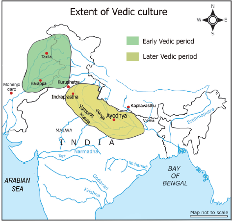
Time, Spread and Sources
Geographical range |
North India |
Period |
Iron age |
Time |
1500 BC (BCE) to 600 BC (BCE) |
Sources |
Vedic literature |
Nature of civilisation |
Rural |
Aryans and their Home in India
Vedic literature
Vedic literature can be classified into two broad categories.
1. Shrutis
The Shrutis comprise the four Vedas, the Brahmanas, the Aranyakas and the Upanishads. They are considered sacred, eternal, and an unquestionable truth. 'Shruti' means listening (or unwritten) ones that were transmitted orally through generations.
2. Smritis
A body of texts containing teachings on religion such as, Ithihasas, Puranas, Tantras and Agamas. Smritis are not eternal.
They are constantly revised. 'Smriti' means definite and written literature.
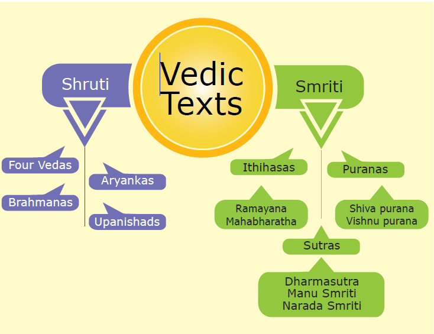
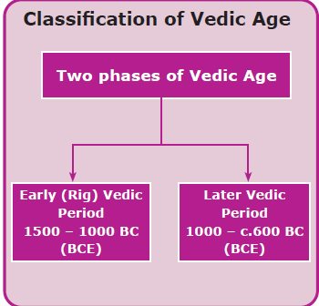
Material remains such as iron implements and pottery from the archaeological sites in Punjab, Uttar Pradesh and Rajasthan along the Indus and the Ganges.
Polity and Society
The Rig Vedic polity was kinship - based. Kula (clan) was the basic unit of the polity. It was under a head called Kulapati. Several families joined together to form a Grama (village). Grama was headed by Gramani. A group of villages was called Vis (clan) and was headed by Vishayapati. Rajan was the head of the Jana (tribe) and he was addressed as Janasyagopa (guardian of the people). There were several tribal kingdoms (Rashtras) during Rig Vedic period (Bharatas, Matsyas, Puras).
King
The main responsibility of the Rajan was to protect his tribe. His powers were limited by tribal assemblies namely Vidhata, Sabha, Samiti and Gana. Of these Vidhata, (the tribal assembly) was the oldest.
Sabha. a council of elders.
Samiti. assembly of people
The king appointed a purohit (chief priest) to assist him. In economic, political and military matters, the king was assisted by the Senani (army chief). Gramani was the leader of the village.
When the Aryans moved east ward- into Ganges-Yamuna-Doab regions, the early settlements were replaced by territorial kingdoms. Hereditary kingship began to emerge. In the monarchical form of government, the power of the king increased and he performed various rituals and sacrifices to make his position strong.
Many Janas or Tribes were amalgamated to form Janapadas or Rashtras in later Vedic period. The importance of Samithi and Sabha diminished and the Vidhata completely disappeared. New states emerged. Bali was a voluntary contribution of the people to the King. In the later Vedic period bali was treated as tax and collected regularly. The Kuru and Panchala kingdoms f lourished and large cities like Ayodhya, Indraprastha and Mathura also emerged during this period.
Bali. a tax consisting of 1/6 of the agricultural produce or cattle for a person.
Social Organization
The Vedic family was patriarchal. The fair complexioned Aryans distinguished themselves from dark complexioned non-Aryans whom they called Dasyus and Dasas. Within the early Vedic Society there were three divisions (Treyi) the general public were called Vis, the warrior class was called Kshatriyas and the Priestly class was named Brahmanas. At a later stage, when the Aryans had to accommodate non-Aryan skilled workers in their social arrangement, a rigid four-fold Varna system was developed, i.e., the priestly Brahmanas, the warrior Kshatriyas, the land owning Vysyas and the skilled workers sudras. Thus, a graded social order emerged.
Although the Vedic Age is evidenced by good number of texts, it does not have adequate amount of material evidences.
Status of women
In Rig Vedic society, women relatively enjoyed some freedom. The wife was respected as the mistress of the household. She could perform rituals along with her husband in their house. Child marriage and sati were unknown. There was no bar on the remarriage of widows. Nevertheless, the women were denied right to inherit property from their parents. They played no role in public affairs.
In the later Vedic period the role of women in society, as well as their status, even within the family, declined. Women could no longer perform rituals in the family. The rules of marriage became much more complex and rigid. Polygamy became common. Widow remarriage was not encouraged. Education was denied to women. Intercaste marriages were spurned.
Economic Life
Economy in the Vedic period was sustained by a combination of pastoralism and agriculture. Though occupation of Rig Vedic Aryans was cattle rearing, there were carpenters, chariot makers, potters, smiths, weavers, and leather workers. Ochre Coloured Pottery (OCP) was attributed to this period. Horses, cows, goats, sheep, oxen and dogs were domesticated.
When Aryans permanently settled in Sindh and the Punjab regions they began to practise agriculture. The staple crop was yava (barley). There is no mention of wheat or cotton in the Rig-Veda, though both were cultivated by the Indus people. Two crops a year were raised.
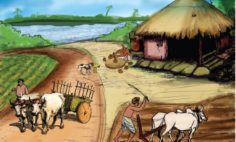
In the later Vedic period the Aryans tamed elephants, apart from cow, goat, sheep and horse. In addition to craftsmen of early Vedic period there were also jewellers, dyers and smelters. Pottery of this period was Painted Grey Ware Culture.
Use of iron plough and axe helped to put more areas of land under cultivation. Crops of wheat, rice and barley were cultivated. With the growth of agriculture, the idea of private possession of land came into existence. New crafts and arts developed leading to surplus production of commodities for sale.
Trade became extensive. Barter system was prevalent (exchange of goods). They used Nishka, Satmana (gold coins) and Krishnala (silver coins) for business transactions.
Religion
Rig Vedic Aryans worshipped mostly the earthly and celestial gods like Prithvi (Earth), Agni (fire), Vayu (wind), Varuna (rain), Indra (Thunder). There were also
lesser female deities like Aditi (goddess of eternity) and Usha (appearance of dawn). Their religion was Yajna centered. The mode of prayer was recitation of Vedic hymns. People prayed for the welfare of Praja (children) Pasu (cattle) and Dhana (wealth). Cow was considered a sacred animal. There were no temples. Idol worship had not yet come into existence.
Lateron priesthood became a profession and a hereditary one. New gods were perhaps adopted from non-Aryans. Indra and Agni lost their importance. Prajapathi (the creator) Vishnu (the protector) and Rudra (the destroyer) became prominent. Sacrifices and rituals became more elaborate.
Gurukula System of Education
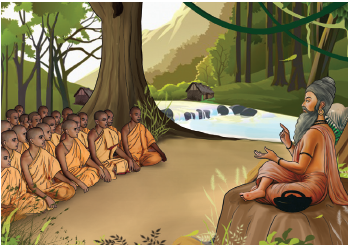
Towards the end of the later Vedic period, the concept of four stages in life (the four ashramas) developed.
State the Differences between Indus and Vedic Civilisation
|
|
|
|
|
|
The early Vedic culture in northern India coincided with Chalcolithic cultures that prevailed in other parts of the sub-continent. Since, people used copper (chalco) and stone (lithic), it was called Chalcolithic period.
Though Chalcolithic culture of India was contemporary to the mature phase of Harappan culture, they continued to exist even after the decline of the latter.
The later Vedic culture in north India and the Iron Age in south India belong to the same period.
Towards the end of Iron Age, people stepped into what is known as Megalithic Culture (600 Before Christ (Before Common Era) and Anno Domini (Common Era) 100).
Megalithic Period in ancient Tamilakam synchronised with the pre-Sangam period. The Black and Red Ware Pottery became the characteristic of the Megalithic period.
Some of the Megalithic or Iron Age Archaeological Sites in Tamil Nadu
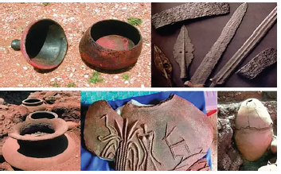
Aathichanallur, Thoothukudi District
Among the artefacts unearthed were Urns, pottery of various kinds (Red Ware, Black Ware), iron implements, daggers, swords, spears and arrows, some stone beads and a few gold ornaments.
Bronze objects representing domestic animals and wild animals like tiger, antelope and elephant have been unearthed.
The people were skilful in making pottery and in working stone and wood.
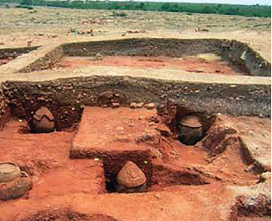
Keelady– Sivagangai District
The Archaeological Survey of India (ASI) excavated an ancient town dating to Sangam Age in Keelady village at Thiruppuvanam taluk. Excavations have produced evidence for brick buildings, and well laid – out drainage system. Tamil – Brahmi inscription on pottery, beads of glass, carnelian and quartz, pearl, gold ornaments and iron objects, shell bangles, ivory dice have been unearthed. In 2017, ASI sent two samples of these for Radio carbon dating to Beta Analytic, Florida, USA. They dated samples as 200 BC (BCE). The Roman artefacts found at the site add to the evidence of ancient Indo -Roman trade relations.
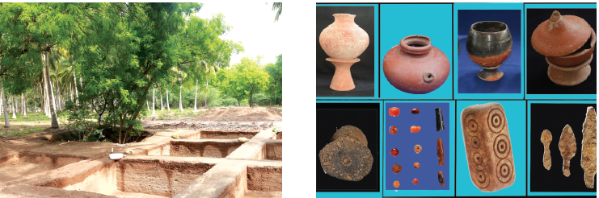
Porunthal – Dindigul District
Finds – Grave goods, glass beads (in red, white, yellow, blue and green), iron swords, pottery with Tamil Brahmi scripts, pots filled with rice, semi-precious metals such as quartz, carnelian, bangles made of glass and shell.
The discovery of iron sickle, pike, and tip of ploughs provide evidences that they had the practice of rice cultivation in Tamil Nadu. A pot of rice from Porunthal site proves that rice was people’s staple food.
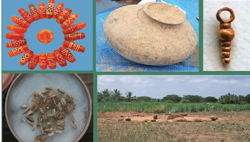
Paiyampalli – Vellore District
Archaeological Finds –Iron artefacts, along with Megalithic Black and Red Ware Pottery have been found.
Evidence for iron smelting has come to light at Paiyampalli. The date of this culture, based on radio carbon dating, is 1000 BC (BCE).
Kodumanal – Erode District
It is identified with the Kodumanam of Pathitrupathu. More than 300 pottery inscriptions in Tamil – Brahmi have been discovered there. Archaeologists have also discovered spindles, whorls (used for making thread from cotton) and pieces of cloth, along with tools, weapons, ornaments, beads, particularly carnelian.
A Menhir found at burial site is assigned to the Megalithic period.
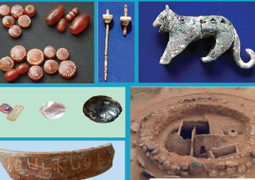
Megalithic Monuments in Tamil Nadu
The people who lived during the last stages of the New Stone Age began to follow the Megalithic system of burial. According to this system, the dead body was placed in a big pot along with burial goods. The Megalithic monuments bear witness to a highly advanced state of civilisation with the knowledge of iron and community living.
Dolmens are Megalithic tombs made of two or more upright stones with a single stone lying across the burial site. Megalithic Dolmens have been found in Veeraraghavapuram village, Kanchipuram district, Kummalamaruthupatti, Dindigul district, and in Narasingampatti, Madurai district.
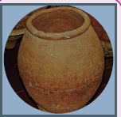
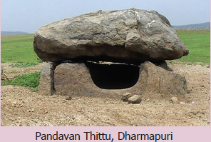
Menhir–In Breton Language 'Men' means “stone” and 'hir', “long.” They are monolithic pillars planted vertically into the ground in memory of the dead.
Menhir at Singaripalayam in Tirupur District and at Vembur in Theni District points to the existence of an ancient settlement along the banks of River Uppar. Menhirs are found at Narasingampatti in Madurai district, Kumarikalpalayam and Kodumanal in Erode district.
Hero Stones – A Hero Stone is a memorial stone raised in remembrance of the honourable death of a hero in a battle or those who lost their lives while defending their village from animals or enemies. Hero stones are found at Maanur village near Palani, Dindigul district, Vellalankottai, Tuticorin district, and Pulimankombai, Dindigul district.
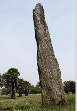
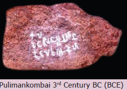
2. Four Vedas
1. Rig
2. Yajur
3. Sama
3. National Motto - Satyameva Jayate (Truth alone triumphs) is taken from Mundaka Upanishad.
4. Metals Known to Rig Vedic People
5. The term ‘Megalith’ is derived from Greek. ‘Mega’, means great and ‘lith’ means stone. Using big stone slabs built upon the places of burial is known as Megalith.
6. Periplus mentions the steel imported to Rome from Peninsular India was subjected to duty in the port of Alexandria.
1. Aryans first settled in dash region.
a. Punjab
b. Middle Gangetic
c. Kashmir
d. North east
2. Aryans came from dash
a. China
b. North Asia
c. Central Asia
d. Europe
3. Our National Motto “Sathyameva Jayate” is taken from dash.
a) Brahmana
b) Veda
c) Aranyaka
d) Upanishad
4. What was the ratio of land revenue collected during Vedic Age
a. 1 by 3
b. 1 by 6
c. 1 by 8
d. 1 by 9
1. Assertion, the vedic age is evidenced by good number of texts and adequate amount of material evidences.
Reason, Shrutis comprise the Vedas, the Brahmanas, the Aranyakas and the Upanishads.
a. Both A and R are true and R is the correct explanation of A.
b. Both A and R are true but R is not the correct explanation of A.
c. A is true but R is false.
d. A is false but R is true.
2. Statement one, Periplus mentions the steel imported into Rome from peninsular India was subjected to duty in the port of Alexandria.
Statement two, Evidences for iron smelting has come to light at Paiyampalli.
a. Statement I is wrong. b. Statement II is wrong.
c. Both the statements are correct. d. Both the statements are wrong.
3. Which of the statement is not correct in the Vedic society
a. A widow could re-marry.
b. Child marriage was in practice.
c. Father’s property was inherited by his son.
4. Which is the correct ascending order of the Rig Vedic society?
a. Grama, Kula, Vis, Rashtra, Jana
b. Kula, Grama, Vis, Jana, Rashtra
c. Rashtra, Jana, Grama, Kula, Vis
d. Jana, Grama, Kula, Vis, Rashtra
1. Vedic culture was dash in nature.
2. dash was a tax collected from the people in Vedic period.
3. dash system is an ancient learning method.
4. Adhichanallur is in dash district.
1. The Roman artefacts found at various sites provide the evidence of Indo – Roman trade relations.
2. A Hero Stone is a memorial stone raised in remembrance of the honourable death of a hero.
3. The army chief was called Gramani.
4. The Black and Red ware pottery became the characteristic of the Megalithic period.
5. Evidence for iron smelting has come to light at paiyampalli
Site |
Finds |
a) Keezhadi |
1) Ivory dice |
b) Porunthal |
2) tip of ploughs |
c) Kodumanal |
3) Spindles |
d) Adichanallur |
4) gold ornaments |
a. 4 3 2 1
b. 3 4 1 2
c. 1 3 4 2
1. Name the four Vedas.
2. What were the animals domesticated by Vedic people?
3. What do you know about Megalith?
4. What are Dolmens?
5. What are Urns?
6. Name the coins used for business transactions in Vedic period?
7. Name some Megalithic monuments found in Tamil Nadu.
1. Write briefly about the archaeological site at Kodumanal
2. Write about the Vedic women in a pragraph.
Difference between Gurukula system of education and Modern system of education.
|
|
|
|
|
|
|
|
|
|
|
|
|
|
|
1. Sentence making by using these new words.
Shruti, Gramani, Rashtras, Iron Age, Semi nomadic, Barter
2. Word Search
|
|
|
|
|
|
|
|
|
|
|
|
|
|
|
|
|
|
|
|
|
|
|
|
|
|
|
|
|
|
|
|
|
|
|
|
|
|
|
|
|
|
|
|
|
|
|
|
|
|
|
|
|
|
|
|
|
|
|
|
|
|
|
|
|
|
|
|
|
|
|
|
|
|
|
|
|
|
|
|
|
1. A pass
2. Text containing teachings on religion
3. A group of villages
4. A tribal assembly
5. Assembly of people
6. Fire
7. Gold coin
8. Period of Vedic Age
Collect information from Newspapers about archaeological finds with the help of your teacher.
Site Visit
Visit to any one of the archaeological sites near your locality.
Mention two Ithikasas. Answer |
Vertical monolithic pillar planted in memory of dead is called dash Answer |
Name the ancient town in Sivagangai district dating to Sangam age. Answer |
Name any two Iron Age sites in Tamilnadu. Answer |
What method of agriculture was practised by early Aryans? Answer |
Name two large cities emerged during Vedic period. Answer |
The Sixth Century BC (BCE) is regarded as an important period in the history of ancient India. As a land mark period in the intellectual and spiritual development in India, historian Will Durant has rightly called it the “shower of stars”.
Literary sources
There were several reasons for the rise of new intellectual awakening. Some of the exploitative practices that paved way for new faiths include:
Jainism is one of the world’s oldest living religions. Jainism grounds itself in 24 Tirthankaras. A Tirthankara, is the one who revealed religious truth at different times. The first Tirthankara was Rishabha and the last one was Mahavira. Jainism gained prominence under the aegis of Mahavira, during the sixth century BC (BCE).

Original name - Vardhamana
Place of Birth - Kundhagrama near
Vaishali, Bihar
Parents - Siddharth, Trishala
Place of Death - Pavapuri, Bihar
Vardhamana, meaning ‘prosperous’, was a kshatriya prince. However, at the age of 30, he renounced his princely status to adopt an ascetic life. He undertook intense meditation.
After twelve and a half years of rigorous penance, Vardhamana attained omniscience or supreme knowledge, known as Kevala.
Omniscience, it is the ability to know everything or be infinitely wise.
Thereafter, he became Jina meaning one who conquered worldly pleasure and attachment. His followers are called Jains. Mahavira reviewed the ancient Sramanic traditions and came up with new doctrines. Therefore, he is believed to be the real founder of Jainism. Unique Teachings of Jainism
Tri–rathnas or Three Jewels
Mahavira exhorted the three – fold path for the attainment of moksha and for the liberation from Karma.
They are
Moksha, Liberation from the cycle of birth and death
Jain Code of Conduct
Mahavira asked his followers to live a virtuous life. In order to live a life filled with sound morals, he preached five major principles to follow.
They are:
Ahimsa - not to injure any living beings
Satya - to speak truth
Asteya - not to steal
Aparigraha - not to own property
Brahmacharya – Celibacy
Digambaras and Svetambaras
Jainism split into two sects.
Digambaras

Svetambaras
Reasons for the Spread of Jainism
The following are the main reasons for the wide acceptance of Jainism in India
Influence of Jainism (Samanam) in Tamil Nadu


Original name - Siddhartha
Place of Birth - Lumbini Garden,
Nepal
Parents - Suddhodana,
Maya devi
Place of Death - Kushi Nagar, UP
Gautama Buddha was the founder of Buddhism. His real name was Siddhartha. Like Mahavira, he was also a Kshatriya prince belonging to the ruling Sakya clan. When Siddhartha was only seven days old his mother died. So, he was raised by his step mother Gautami.
Four Great Sights
At the age of 29, Siddhartha saw four sorrowful sights. They were:

Enlightenment
Buddha, the Awakened or Enlightened One, realised that the human life was full of misery and unhappiness. So, at the age of 29 he left his palace and became a hermit. He sacrificed six years of his life towards penance. Nonetheless deciding that self-mortification was not a path to salvation, Buddha sat under a Pipal tree and undertook a deep meditation near Gaya.

On the 49th day he finally attained enlightenment. From that moment onwards, he was called Buddha or the Enlightened One. He was also known as Sakya Muni or Sage of Sakya clan.
Buddha delivered his first sermon at Deer Park in Sarnath, near Benaras. This was called Dharma Chakra Pravartana or the Turning of the Wheel of Law.
Buddha’s Four Noble Truths
Eight Fold Path
The teachings of Lord Buddha were simple and taught in a language which people used for communication. Since the teachings addressed the everyday concern of the people, they could relate to them. He was opposed to rituals and sacrifices.
Teachings of Buddha
The Wheel of life – represents the Buddhist view of the world.
Buddhist Sangha
Buddha laid foundation for a missionary organization called Sangha, meaning association for the propagation of his faith. The members were called bhikshus (monks). They led a life of austerity.
Hinayana Did not worship idols or images of Buddha. |
Mahayana Worshiped images of Buddha. |
Hinayana Practiced austerity. |
Mahayana Observed elaborate rituals |
Hinayana Believed that Salvation of the individual as its goal. |
Mahayana Believed that salvation of all beings as its objective |
Hinayana Used Prakrit language. |
Mahayana Used Sanskrit language |
Hinayana Hinayana is also known as Theravada. Spread to Sri Lanka, Myanmar (Burma) and South East Asian Countries. |
Mahayana Spread to Central Asia, Tibet, China and Japan where middle path was accepted. |
Causes for the Spread of Buddhism
Middle path – It refers to neither indulging in extreme attachment to worldly pleasure nor committing severe penance.
Dissimilarities
JAINISM It followed extreme path. |
BUDDHISM It followed middle path. |
JAINISM It remained in India only. |
BUDDHISM It spread across many parts of the world. |
JAINISM It does not believe in the existence of god, but believes soul in every living being. |
BUDDHISM It emphasises on ANATMA (no eternal soul) and ANITYA (impernance). |
Buddhist Councils
First – Rajagriha
Second – Vaishali
Third – Pataliputra
Fourth – Kashmir
Influence of Buddhism in Tamilnadu


The Jatakas are popular stories about the previous birth and life of Buddha, as human and as an animal. They teach morals.
Once upon a time, there lived a woodpecker and a lion. One day, the lion hunted a big bison and sat down to eat it. It so happened that while having his meal, a big bone got stuck in the lion’s throat. He was not able to remove it and was in great pain.
A kind-hearted woodpecker offered to help the lion. The woodpecker, however, told the lion that he would only take out the bone if the lion promised not to eat him while removing the bone. The lion gladly agreed and opened his mouth in front of the woodpecker. The woodpecker hopped inside the lion’s mouth, and easily pulled out the bone. The lion kept his promise and let the woodpecker fly away.


Soon the lion recovered completely and killed another bison. The woodpecker also thought of joining the lion and asked for a small share of meat. To her utter disappointment the lion blatantly refused to share his meal with her. The Lion said, how dare you ask me for more favours? I have already done so much for you

The woodpecker did not understand what the lion was talking about. The lion then clarified, you should be thankful to me that I did not devour you when you were taking out the bone from my throat. Now do not expect anything else from me and go away. The woodpecker said to himself, “It was indeed a mistake to help such an ungrateful creature, Nevertheless, it is not worth being angry or holding grudge against someone as unworthy as him.

Elsewhere in the world 6th Century BC (BCE)


Elsewhere in the world sixth Century BC (BCE)
Superstitious beliefs
belief in things that are not real or possible (மூடநம்பிக்கைகள்)
Preceptor
a teacher or instructor (ஆசான்)
Doctrine
set of principles or beliefs (கோட்பாடு)
Virtuous
having high moral standards (நல்லொழுக்கம்)
Sacred book
holy book (புனித நூல்)
Frescoes
a painting done in water colour on wet plaster (ஈரமான சுவற்றில்வண்ணக் கலவைகொண்டு வரையப்பட்டஓவியங்கள்)
Corpse
a dead body (சடலம்)

4. Consider the following statements regarding the causes of the origin of Jainism and Buddhism.
I. Sacrificial ceremonies were expensive.
II. Supertitious beliefs and practices confused the common man.
Which of the above statement is or are correct?
a. Only I
b. Only II
c. Both I & II
d. Neither I nor II
5. Which of the following about Jainism is correct?
a. Jainism denies God as the creator of universe.
b. Jainism accepts God as the creator of universe.
c. The basic philosophy of Jainism is idol worship.
d. Jains accept the belief in Last Judgement.
6. Circle the odd one:
Parsava, Mahavira, Buddha, Rishaba
7. Find out the wrong pair:
a. Ahimsa - not to injure
b. Satya - to speak truth
c. Asteya - not to steal
d. Brahmacharya - married status
8. All the following statements are true of Siddhartha Gautama except:
a. He is the founder of Hinduism.
b. He was born in Nepal.
c. He attained Nirvana.
d. He was known as Sakyamuni.
1. The doctrine of Mahavira is called dash.
2. dash is a state of freedom from suffering and rebirth.
3. dash was the founder of Buddhism.
4. Thiruparthikundram, a village in Kanchipuram was once called dash
5. dash were built over the remains of Buddha’s body.
1. Buddha believed in Karma.
2. Buddha had faith in caste system.
3. Gautama Swami compiled the teachings of Mahavira.
4. Viharas are temples.
5. Emperor Ashoka followed Buddhism.
1. Angas - Vardhamana
2. Mahavira - monks
3. Buddha - Buddhist shrine
4. Chaitya - Sakya muni
5. Bhikshus - Jain text
1. What are the Tri-ratnas (three jewels) of Jainism?
2. What are the two sects of Buddhism?
3. What does Jina mean?
4. Write any two common features of Buddhism and Jainism.
5. Write a note on Buddhist Sangha.
6. Name the Chinese traveler who visited Kancheepuram in seventh century AD(CE).
7. Name the female jain monk mentioned in Silapathikaram.
1. Name the eight-fold path of Buddhism?
2. What are the five important rules of conduct in Jainism?
3. Narrate four noble truths of Buddha?
4. Write any three differences between Hinayana and Mahayana sects of Buddhism?
5. Jainism and Buddhism flourished in Sangam period. Give any two evidences for each.
1. Karma – a person’s action. Name any 10 good actions (deeds).
1. Read any one story from Jatakas and write a similar story on your own.
2. Make a tabular column in the following headings.
Religion |
Name of the founder with picture |
Name of their parents |
Key Principle (any one) |
Sects |
Symbol |
|
|
|
|
|
|
|
|
|
|
|
|
3. Place the following words in the appropriate column.
Words: Jina, Mahayana, Tirthankaras, Stupas Nirvana, Digambara, Tripitakas, Agama
Jainism |
Buddhism |
4. Task cards activity:
Make informative cards for the following religions. Hinduism, Christianity, Islam, Buddhism, Jainism
5. Make a Venn diagram to indicate similarities and dis-similarities of Jainism and Buddhism.
6. Solve the puzzle
Left to right
1. One of the Tri Rathna: Right
2. Buddha’s teachings are referred as
3. A great centre of education
4. The place where Buddha attained enlightment
5. Not to injure any living being
Right to left
6. Mother of Siddhartha
7. The Quality of man’s life depends on his deed
Top to bottom
8. Lumbini is in
9. Buddhist prayer hall
10. A state of freedom from birth
11. Jain scripture compiled by Gautama Swami.
Create a story board for Jainism and Buddhism in a chart
Early life
|
Four Noble Truths |
Eight - Fold Path
|
Teachings of Buddha
|
Buddhist Sangha |
Buddhist Sects |
The Jain monks who wear white clothes are called Answer dash |
What is the meaning of Buddha? |
Who is the 24th Tirthankara of Jainism? Answer dash |
Who delivered Dharmachakra Pravartana? Answer dash
|
How many noble truths are there in Buddhism? Answer dash
|
Which religion’s teachings include four noble truth and eight-fold path? Answer dash |
Name the earliest Buddhist literature which deals with the stories of various births of Buddha? Answer dash |
Name any four places where Jain monasteries were located in Tamil Nadu. Answer dash
|
Name one of the twin Indian's Epics Answer dash |
ICT CORNER
Virtual Tour of Sittanavasal
Through this activity you will be able to see Virtual Tour about Cave Paintings in Tamil Nadu

Step 1. Open the Browser and type the URL or scan QR code which is given below.
Step 2. You can see Virtual Tour website. Click to allow Adobe Flash Player on the screen.
Step 3. Open slide view in menu bar and access control button
Step 4. Click “Red Arrow Button” you can see cave paintings

URL
http://view360.in/virtualtour/sithannavasal/


During the sixth Century BC (BCE) many territorial states emerged. This Led to the transformation of socio – economic and political life of the people in the Gangetic plains. A new intellectual awakening began to develop in northern India. Mahavira and Gautama Buddha represented this new awakening.
Iron played a significant role in this transformation of society. The fertile soil of the Gangetic Valley and the use of iron ploughshares improved agricultural productivity. In addition, iron facilitated craft production. Agrarian surplus and increase in craft products resulted in the emergence of trading and exchange centres. This in turn paved the way for the rise of towns and cities. Thus, knowledge in the use of iron gave Magadha an advantage over other Mahajanapadas. Thus, the Magadha could establish an empire of its own.
There were two kinds of government in north India during the sixth century BC (BCE)
The term gana means people of equal status. Sangha means assembly. The gana - sanghas covered a small geographical area ruled by an elite group. The gana sanghas practiced egalitarian traditions.
A kingdom means a territory ruled by a king or queen. In a kingdom (monarchy), a family, which rules for a long period becomes a dynasty. Usually these kingdoms adhered to orthodox Vedic traditions.
Janapadas were the earliest gathering places of men. Later, Janapadas became republics or smaller kingdoms. The widespread use of iron in Gangetic plain created conditions for the formation of larger territorial units transforming the janapadas into Mahajanapadas.
(“Great Countries”) Sixteen Mahajanapadas dotted the Indo- Gangetic plain in the sixth century BC (BCE). It was a transition from a semi – nomadic kinship - based society to an agrarian society with networks of trade and exchange. Hence an organized and a strong system of governance required a centralised state apparatus.
There were four major Mahajanapadas
They were
Among the four Mahajanapadas, Magadha emerged as an empire.

Four dynasties ruled over Magadha Empire.
Magadha’s gradual rise to political supremacy began with Bimbisara of Haryanka dynasty.
Bimbisara extended the territory of Magadhan Empire by conquests and by matrimonial alliances with Lichchhavis, Madra and Kosala. His son Ajatasatru, a contemporary of Buddha, convened the first Buddhist Council at Rajagriha. Udayin, the successor of Ajatasatru, laid the foundation of the new capital at Pataliputra.
Haryanka dynasty was succeeded by the Shishunaga dynasty. Kalasoka, a king of Shishunaga dynasty, shifted the capital from Rajagriha to Pataliputra. He convened the second Buddhist Council at Vaishali.
Nandas were the first empire builders of India. The first Nanda ruler was Mahapadma. Mahapadma Nanda was succeeded by his eight sons. They were, known as Navanandas (nine Nandas). Dhana Nanda, the last Nanda ruler, was overthrown by Chandragupta Maurya.
Sources
Archaeological sources |
Punch Marked Coins. |
Inscriptions |
Edicts of Ashoka, Junagath Inscription |
Secular Literature
|
Kautilya’s Arthasastra Visakadatta’s Mudrarakshasa Mamulanar’s poem in Agananuru |
Religious Literature |
Jain, Buddhist texts and Puranas |
Foreign Notices |
Dipavamsa, Mahavamsa and Indica |
Capital |
Pataliputra (present day Patna, Bihar) |
Government |
Monarchy |
Historical era |
322 BC (BCE) TO 187 BC (BCE) |
Important Kings |
Chandragupta, Bindusara, Ashoka |

The Mauryan Empire was the first largest empire in India. Chandragupta Maurya established the empire in Magadha.
Bhadrabahu, a Jain monk, took Chandragupta Maurya to the southern India.
Chandragupta performed Sallekhana (Jaina rituals in which a person fasts unto his death) in Sravanbelgola (Karnataka).
Real name of Bindusara was Simhasena. He was the son of Chandragupta Maurya. Greeks called Bindusara as Amitragatha, meaning slayer of enemies. During Bindusara’s reign Mauryan Empire spread over large parts of India. He appointed his son Ashoka as a governor of Ujjain. After his death, Ashoka ascended the throne of Magadha.
Ashoka was the most famous of the Mauryan kings. He was known as Devanam Piya meaning beloved of the Gods.
Ashoka fought the Kalinga war in 261 BC (BCE). He won the war and captured Kalinga.
The horror of war was described by the king himself in the Rock Edict XIII.
Ashoka shines and shines brightly like a bright star, even unto this day, H. G. Wells, Historian
Chandasoka (Ashoka, the wicked) to Dhammasoka (Ashoka the righteous)
After the battle of Kalinga, Ashoka became a Buddhist. He undertook tours (Dharmayatras) to different parts of the country instructing people on policy of Dhamma. The meaning of Dhamma is explained in Ashoka’s – Pillar Edict II
It contained the noblest ideas of humanism, forming the essence of all religions.
He laid stress on
Ashoka sent his son Mahinda and Sanghamitta to Srilanka to propagate Buddhism. He also sent missionaries to West Asia, Egypt, and Eastern Europe to spread the message of Dhamma. The Dhamma-mahamattas were a new cadre of officials created by Ashoka. Their job was to spread dhamma all over the empire. Ashoka held the third Buddhist Council at his capital Pataliputra.
The 33 Edicts on the pillars as well as boulders and cave walls made by the Emperor Ashoka, describe in detail Ashoka’s belief in peace, righteousness, justice and his concern for the welfare of his people.

The Rock Edicts II and XIII of Ashoka refer to the names of the three dynasties namely Pandyas, Cholas, the Keralaputras and the Sathyaputras.
Centralized administration

The king was the supreme commander of the army.
A board of 30 members divided into six committees with five members on each, monitored
The punch marked silver coins (panas) which carry the symbols of the peacock, and the hill and crescent copper coins called Mashakas formed the imperial currency.
Trade flourished particularly with Greece (Hellenic) Malaya, Ceylon and Burma. The Arthasastra refers to the regions producing specialized textiles – Kasi (Benares), Vanga(Bengal), Kamarupa (Assam) and Madurai in Tamilnadu.
Main Exports Spices Pearls Diamonds Cotton textiles Ivory Works Conch Shells |
Main Imports Horses Gold Glassware Linen |

Mauryan art can be divided into two
Indigenous Art – Statues of Yakshas and Yakshis
Royal Art – Palaces and Public buildings, Monolithic Pillars, Rock cut Architecture, Stupas

Stupas

A Stupa is a semi – spherical dome like structure constructed on brick or stone. The Buddha’s relics were placed in the centre of the dome.
Monolithic Pillar – Sarnath
The crowning element in this pillar is Dharma chakra.

Beginning of Rock cut Architecture Rock – Cut Caves of Barabar and Nagarjuna Hills

There are several caves to the north of Bodh Gaya. Three caves in Barabar hills have dedicative inscription of Ashoka. And three in Nagarjuna hills have inscriptions of Dasharatha Maurya (grandson of Ashoka).
Ancient name Rajagriha |
Its Modern name Rajgir |
Ancient name Pataliputra |
Its Modern name Patna |
Ancient name Kalinga |
Its Modern name Odisha |
Elsewhere in the world

The Great Wall of China is an ancient series of fortification. During third century BC (BCE) emperor Qin-Shi Huang linked these walls on Northern border to protect his empire.

An ancient temple in Olympia, Greece, dedicated to the god Zeus, constructed during fifth century BC (BCE), It is one of the seven wonders of the ancient world.
Egalitarian
a person who advocates the principle of equality for all. (சமத்துவம்)
Monastery
a building in which monks live and worship. (மடாலயம்)
Treatise
a written work dealing systematically with a subject. (ஆய்வுக்கட்டுரை)
Horror
a feeling of fear and anxiety (பேரச்சமும் நடுக்கமும்)
1. 16 Mahajanapadas
Kuru, Panchala, Anga, Magadha, Vajji, Malla, Kasi, Kosala, Avanti, Chedi, Vatsa, Machcha, Surasena, Assaka, Gandhara and Kamboja.
2. Nalanda - UNESCO World Heritage Site.
Nalanda was a large Buddhist monastery in ancient kingdom of Magadha. It became the most renowned seat of learning during the reign of Guptas. The word Nalanda is a Sanskrit combination of three words Na plus alam plus daa meaning no stopping of the gift of knowledge.
3. Megasthenese
He was the ambassador of the Greek ruler, Seleucus, in the court of Chandra Gupta. He stayed in India for 14 years. His book Indica is one of the main sources for the study of Mauryan Empire.
4. Grandeur of Pataliputra
The great capital city in the Mauryan Empire, which had 64 gates to the city with 570 watch towers.
5. Lion Capital of Ashoka
The Emblem of the Indian Republic has been adopted from the Lion Capital of one of Ashokas pillars located at Sarnath. The wheel from the circular base, the Ashoka Chakra is a part of the National Flag.

6. An Edict is an official order or proclamation issued by a person in authority or a king.
7. The script of the inscriptions
At Sanchi – Brahmi
At Kandahar – Greek and Aramaic
At North Western part – Kharoshthi
8. The Junagarh and Girnar Inscription of Rudradaman records that the construction of a water reservoir known as Sudarshana Lake was begun during the time of Chandragupta Maurya and completed during Ashoka’s reign.
9. Yakshas were deities connected with water, fertility, trees, the forest and wilderness. Yakshis were their female counterpart.

1. The Kingdom which was most powerful among the four Mahajanapadas
a) Anga b) Magadha c) Kosala d) Vajji
2. Among the following who was the contemporary of Gautama Buddha?
a) Ajatasatru b) Bindusara c) Padmanabha Nanda d) Brihadratha
3. Which of the following are the sources of Mauryan period?
a) Artha Sastra b) Indica c) Mudrarakshasa d) All
4. Chandra Gupta Maurya abdicated the thrown and went to Sravanbelgola along with Jaina Saint dash.
a) Badrabahu b) Stulabahu c) Parswanatha d) Rushabhanatha
5. dash was the ambassador of Seleucus Nicator.
a) Ptolemy b) Kautilya c) Xerxes d) Megasthenese
6. Who was the last emperor of Mauryan Dynasty?
a) Chandragupta Maurya b) Ashoka
c) Brihadratha d) Bindusara
1. Statement (A) Ashoka is considered as one of India’s greatest rulers.
Reason (R) He ruled according to the principle of Dhamma.
a. Both A and R are true and R is the correct explanation of A.
b. Both A and R are true but R is not the correct explanation of A.
c. A is true but R is false.
d. A is false but R is true.
2. Which of the statements given below is/are correct?
Statement 1 Chandragupta Maurya was the first ruler who unified entire India under one political unit.
Statement 2 The Arthashastra provides information about the Mauryan administration
a. only 1 b. only 2 c. both 1 and 2 d neither 1 nor 2
3. Consider the following statements and find out which of the following statement(s) is (or) are correct.
1) Chandragupta Maurya was the first king of Magadha.
2) Rajagriha was the capital of Magadha.
a. only 1 b. only 2 c. both 1 and 2 d. neither 1 nor 2
4. Arrange the following dynasties in chronological order.
a. Nanda – Sishunaga – Haryanka – Maurya
b. Nanda – Sishunaga –Maurya – Haryanka
c. Haryanka - Sishunaga – Nanda - Maurya
d. Sishunaga – Maurya – Nanda – Haryanka
5. Which of the following factors contributed to the rise of Magadhan Empire?
1) Strategic location
2) Thick forest supplied timber and elephant
3) Control over sea
4) Availability of rich deposits of iron ores
a. 1, 2 and 3 only
b. 3 and 4 only
c. 1, 2 and 4 only
d. All of these
1. dash was the earliest capital of Magadha.
2. Mudrarakshasa was written by dash.
3. dash was the son of Bindusara.
4. The founder of the Maurya Empire was dash.
5. dash were appointed to spread Dhamma all over the empire.
1. The title Devanam Piya was given to Chandragupta Maurya.
2. Ashoka gave up war after his defeat in Kalinga.
3. Ashoka’s Dhamma was based on the principle of Buddhism.
4. The lions on the currency notes is taken from the Rampurwa bull capital.
5. Buddha's relics were placed in the centre of the Stupas.
a. Gana |
1. Arthasastra |
b. Megasthenese |
2. religious tours |
c. Chanakya |
3. people |
d. Dharmayatras |
4. Indica |
a. 3 4 1 2
b. 2 4 3 1
c. 3 1 2 4
d. 2 1 4 3
1. Mention any two literary sources of Mauryan period.
2. What is a stupa?
3. Name the dynasties of Magadha.
4. What were the sources of revenue during Mauryan period?
5. Who assisted Nagarika in the administration of towns?
6. What do you know from the Rock Edicts II and XIII of Ashoka?
7. Which classical Tamil poetic works have the reference of Mauryans?
1. What did Ashoka do to spread Buddhism? (Write any three points)
2. Write any three causes for the rise of Magadha.
1. Kalinga war became a turning point in Ashoka’s life. How?
2. Write any five welfare measures you would do if you were a king like Ashoka?

This is the picture of an Ashokan edicts.
a. What are edicts?
b. How are Ashokan edicts useful?
c. Where were these edicts inscribed?
d. Name the script used in Sanchi Inscription.
e. How many Rock Edicts are there?
1. I belonged to Haryanka dynasty. I extended territory by matrimonial alliances. My son is Ajatasatru – who am I?
2. I played a significant role in the transformation of society. I am used in making ploughshare - Who am I?
3. I was known as Devanampiya. I embraced the path of peace - Who am I?
4. I established the first largest empire in India. I performed Sallekhana. Who am I?
5. I am found in the Lion capital of Ashoka. I am at the centre of our national flag. Who am I?
A 1 |
B 2 |
C 3 |
D 4 |
E 5 |
F 6 |
G 7 |
H 8 |
I 9 |
J 10 |
K 11 |
L 12 |
M 13 |
N 14 |
O 15 |
P 16 |
Q 17 |
R 18 |
S 19 |
T 20 |
U 21 |
V 22 |
W 23 |
X 24 |
Y 25 |
Z 26 |
1. The first dynasty that ruled over Magadha was dash (8, 1, 18, 25, 1, 14, 11, 1).
2. Dash empire was the first largest empire (13, 1, 21,18, 25, 1).
3. Dash laid the foundation of the new capital at Pataliputra (21, 4, 1, 25, 9, 14).
4. Dash was one of the main exports (19, 16, 9, 3, 5, 19).
5. Dash became later the most renowned seat of learning (14, 1, 12, 1, 14, 4, 1).
6. Revenue from agricultural produce was called dash (2, 8, 1, 7, 1).
7. The horror of war was described in dash (18, 15, 3, 11, 5, 4, 9, 3, 20)
8. Greeks called Bindusara as dash (1, 13, 9, 20, 18, 1, 7, 1, 20, 8, 1)
9. The crowning element in Saranath Pillar is dash (4, 8,1, 18, 13, 1, 3, 8, 1, 11, 18, 1)
10. Council of ministers were known as dash (13, 1, 14, 4, 18, 9, 16, 1, 18, 9, 19, 8, 1, 4)
1. Field trip to Museum
2. Movie show – about Ashoka and Chandragupta.
1. Mark the extent of Ashokan Empire.
2. Mark the following places on the river map of India
a. Taxila b. Pataliputra c. Ujjain d. Sanchi e. Indraprastha
1. Make a model of Ashoka Chakra.
2. Make a model of Sanchi Stupa.
3. Draw and colour our National Flag.
Name the two kinds of government in North India during 6th century B.C (BCE) Answer |
Who conducted second Buddhist council at Vaishali? Answer |
What is the modern name for Kalinga? Answer |
Town was administrated by dash Answer |
Where was the third Buddhist council convened by Ashoka? Answer |
Name any two major Mahajanapadas. Answer |
Which inscription records the construction of Sudarshana lake? Answer |
Who was the last Nanda ruler? Answer |
Name the silver coin which were in use during Maurian period? Answer |
Refrences
ICT CORNER
Histroy from Chiefdoms to Empires
This activity for Maps based on Vector database is a INTERACTIVITY ATLAS which helps to know about Comparative History, Political, Military, Art, Science, Literature, Religion and Philosophy in the world.

Step 1
Open the Browser and type the URL given (or) Scan the QR Code.
Step 2
World History Atlas page will appear.
Step 3
You will enter any kingdom period or political period (ex. Magadha Empire).
Step 4
You will get vector database map.


URL
HISTORY – Class VI
List of Authors and Reviewers
Domain Experts
Doctor Manikumar K.A.
Professor (Retaird),
Deportment of History,
Manonmaniam Sundaranar University, Tirunelveli District.
Reviewers
A. Karunanandam,
Former H.O.D.,
Department of History, Vivekananda College, Chennai.
Ravichandran S.L.
Associate Professor (Retaird),
Raju’s College, Rajapalayam.
Appanasamy M.
Advisor,
Textbook Society, TNTB and ESC, Chennai.
Authors AND Content Writers
Gomathi Manickam S.
B.T. Assisttant,
GHSS, Old Perungalathur, Chennai.
B. Srinivasan
BT Asst.,
GHS, Krishnagiri.
Nancy Needhima,
Research Scholar,
Loyola College Institute, Nungambakkam, Chennai.
Academic Co-ordinators
Sujatha M.
Senior Lecturer,
DIET, Chennai.
Joy Christy N.
B.T. Asst.,
T. Kallupatti Block, Madurai.
ICT Co-ordinator
Nagaraj D.
BT Asst., (History),
GHSS, Rappoosal, Pudukottai
EMIS Technology Team
R.M. Satheesh
State Coordinator Technical,
TN EMIS, Samagra Shiksha.
K.P. Sathya Narayana
IT Consultant,
TN EMIS, Samagra Shikaha
R. Arun Maruthi Selvan
Technical Project Consultant,
Art and Design Team
Illustration
K.T. Gandhirajan, Chennai.
Tamil Virtual Academy.
Layout
Arokiyam Felix
Wrapper
Kathir Arumugam
QC
Manohar Radhakrishnan
Co-ordination
Ramesh Munisamy

Pathway
This lesson focuses on the meaning, classification of resources and conservation of resources for sustainable living. It also provides an insight to the various economic activities and in particular it deals with the inter relation between the nature and human activities.
கேடறியாக் கெட்ட இடத்தும் வளங்குன்றா
நாடென்ப நாட்டின் தலை. குறள் 736
எந்த வகையிலும் கெடுதலை அறியாமல், ஒருவேளை கெடுதல் ஏற்படினும் அதனை சீர்செய்யுமளவிற்கு வளங்குன்றா நிலையில் உள்ள நாடுதான் நாடுகளிலேயே தலை சிறந்ததாகும்.
Kulalee was lying in her bed to see if her father would enter her room. She wanted her report card to be signed. There was no symptom of coming of her father. She jumped out of her bed and ran to her
mother in the kitchen.
Kulalee: Amma where is Appa?
Amma: Today he has ‘overtime’ and he has left early.
Kulalee: Overtime what is that?
Amma: Working more hours than the actual working hours is called overtime. Your father’s boss wants him to manufacture a few more solar panels because they have some urgent orders.
Kulalee: He should have told me last night. My progress report has to be signed.
Amma: Enough of that. Now go have your bath. I’ll sign your report this time.
Kulalee: Amma, thank you ma. One more question. What does he make the solar panels from?
Amma: Let me explain for you to understand. Silicon, extracted from sand, a natural resource, is used in making PV cells. It converts solar energy into electrical energy.
Kulalee: Natural resource, what do you mean by it?
Amma: All things useful to man is resource. And if it is directly from nature we call it natural resource.
Kulalee: Then what kind of work does father do?
Amma: He is a manufacturer of things by using natural resources.
Kulalee: Can we called the manufactured goods as manmade resources?
Amma: Yes, they are called as manmade resources.
Kulalee: Ok amma. It’s getting late. Let me get ready.
Activity: 1
Circle the words which are not associated for gardening. Soil, Seeds, A piece of Land, Computers, Saplings, Flower Pots, Manure, Textbooks.
Resource is anything that fulfills human needs. When anything is of some use it becomes valuable. All resources have value. The value can be either commercial or non-commercial. Commercial resources have great economic value. (example) Petroleum. The
Non-commercial resources are very abundant in availability (example) Air.
HOTS
Do all the items in your shopping list have commercial value?

HOTS
Is the tilt of the solar panels same everywhere on Earth?
Resources can be natural, man-made and human resources.

All resources that have been directly provided by nature are called Natural resources. The air, water, soil, minerals, natural vegetation and wild life around us are all-natural resources. The use of any natural resource depends on the place it is available, the form in which it is available and the technology necessary to avail it.

Natural resources can be classified into different groups depending on origin, development, renewability, distribution, ownership etc.
A. ON THE BASIS OF ORIGIN:
On the basis of origin, resources can be classified into biotic and abiotic resources.
one. All living resources are biotic resources, plants, animals and other micro organisms are biotic resources.

two. Abiotic resources are non-living things. Land, water, air and minerals are abiotic resources.
The biotic resources were mere substances till they were recognized by humans. According to the human needs the substances were collected by the ancient men and preserved for use. In the beginning, man had only three basic needs-food, clothing and shelter. He collected things through primary activities such as hunting, food gathering, fishing and forestry. Later when food became scarce, they had to cultivate and that became agriculture and the cattle were also reared on their farms to fulfill their basic needs.

The abiotic resources were also sought after by the early men. They went in search of better landforms where they had enough water resources for agriculture and their cattle. They were inneed of tools right from hunting to agriculture. Primarily the tools were only made of stones. Later man dug the earth for better abiotic resources and found copper first and iron later. He also mined precious metals simultaneously for making ornaments. Later mining became one of the leading primary activities and still holds an important place among the economic activities.
B. ON THE BASIS OF DEVELOPMENT:
Based on the level of development, resources can be divided into actual and potential resources.
One. Actual resources are resources that are being used and the quantity available is known. (example) Coal at Neyveli.
Two. Potential resources are resources that are not being used in the present and its quantity and location are not known. The technology to extract such resources is also yet to be developed. (e.g.) Marine yeast found in the Bay of Bengal and Arabian Sea.

C. ON THE BASIS OF RENEWABILITY:
On the basis of renewability resources can be classified as renewable resources and non-renewable resources.
One. Resources once consumed can be renewed with the passage of time are called renewable resources. (example) Air, Water, Sunlight. Misuse of such resources can also limit its available quantity. So, they have to be used wisely.
Two. The resources which cannot be immediately renewed once they are depleted are called non renewable resources. They become exhausted after use and the time they take to replace does not match the life cycle. Example: Coal, petroleum, natural gas and other minerals.
HOTS
Find out what other resources can renew themselves?

The resources which cannot renew themselves are either scarce or totally absent. So, man is in search of new resources and is conducting several researches. He confirms that a substance is a resource only after research. He tries to harness it and also searches the regions where it may be found in. They are potential resources. Wind energy is one such example. The places where the wind energy can be utilized are still unknown.

HOTS
How did coal originate?
D. ON THE BASIS OF DISTRIBUTION
On the basis of distribution, resources can be classified into localized resources and universal resources.
One. When resources are present in specific regions they are called localized resources. (example) Minerals.
Two. Some resources are present everywhere Such resources are called universal resources. (example) Sunlight and air.
Activity: 2 Which region or continent does each of these animals belong to?

E. ON THE BASIS OF OWNERSHIP
Based on ownership resources can be classified into Individual resources, Community-owned resources, National resources and International resources.
one. Individual resources are resources privately owned by individuals. (example) Farmland.
two. Community-owned resources are resources which can be utilised by all the members of the community. (example) Public parks.

Three. National resources are resources within the political boundaries and oceanic area of a country. (example) Tropical forest regions of India.

Four. International resources are all oceanic resources found in the open ocean. Resources found in this region can be utilized only after an international agreement. (example) Ambergris.

Natural resources are modified or processed by technology into man-made resources. () sugarcane processed to get sugar. All structures built by man can also be called man-made resources. (example) Bridges, Houses, Roads.
This transforming of raw materials into finished goods is called Secondary Activities. Man’s skills and ideas are the basic requirements for these activities.
Activity: 3
What natural resources are necessary to lay a road?
Human resources are groups of individuals who use nature to create more resources. Though human beings are basically natural resources, we classify

human beings separately. Education health, knowledge and skill have made them a valuable resource. (example) Doctors, Teachers, Scientists. Tertiary activities are basically concerned with the distribution of primary and secondary products through a system of transport and trade (example) Banking, Trade and Communications. The quantity and quality of institutions and organizations involved in making the professionals decide the human resource of a country.
Activity: 4
Identify the personalities and professionals


Gandhian thought on Resources

There is enough for everybody’s need and not for anybody’s greed. Mahatma Gandhi blamed human beings for depletion of resources because of
(ONE) over exploitation of resources
(TWO) Unlimited needs of human beings.
So, conservation is very important.
Resource planning And Management
Resource planning is a technique or skill of proper utilization of resources. Resource planning is necessary because
(One) Resources are limited, their planning is quite necessary so that we can use them properly and at the same time we can save them for our future generation.
(two) Resources are not only limited but also, they are unevenly distributed over the different parts of the World.
(three) It is essential for the production of resource to protect them from over exploitation.
Careful use of resources is called conservation of resources. Resources are being used at a very fast rate due to the rapid increase in population. So, natural resources are depleting fast, wisely using resources can control the depleting ratios. Development is necessary without affecting the needs of the future generations. If the present needs of resources are met and the conserving of resources for the future are balanced, we call it sustainable development. Sustainable development can take place when
(1) The reasons of depletion are identified.
(2) Wastage and excess consumption is prevented.
(3) Reusable resources are recycled.
(4) Pollution is prevented.
(5) Environment is protected.
(6) Natural vegetation and wild life are preserved.
(7) Alternative resources are used.
The easiest way to conserve resources is to follow the '3R's. Reduce, Reuse and Recycle.

1. Manufacture – production.
2. Solar panel – A plate that can
absorb solar
energy.
3. PV cells – Photo voltic cells
4. Localized – Limited to specific
areas.
5. Universal – found everywhere.
6. Open ocean – areas of ocean that
does not belong to
any country.
7. Depleting – reducing.
8. Conservation – saving for future
use.
9. Sustainable – able to be
maintained.
10. Tertiary – third level.
Do you know
1. Anything becomes a resource only when its use is discovered. The needs of human beings are ever changing. According to the ever changing needs, resources keep changing. Time and Technology are two important factors that determine whether a substance is a resource or not. for example: Sun’s energy to generate electricity was made possible after the invention of solar panels (technology); and the receding of coal and petrol needed an inexhaustible resource (time).
2. Marine yeast have greater potential than the terrestrial yeast. They can be used in baking, brewing, wine, bio-ethanol and pharmaceutical protein production.
3. Tropical rain forests are called the ‘World’s largest Pharmacy’ as 25% of the natural vegetation are medicinal plants. (example) Cinchona.
4. Ambergris is an extract from the sperm whale. A pound (0.454kg) of sweet – smelling ambergris is worth US $63,000 and used in perfume industries.

A, Natural resource |
B, Minerals |
A, International resource |
B, Sustainable development |
A, Reduce, Reuse, Recycle |
B, Air |
A, Non-renewable |
B, Manufacturing |
A, Universal resource |
B, Ambergris |
A, Secondary activities |
B, Forest |
1. Sugarcane is processed to make dash
2. Conservation of resources is dash use of resources.
3. Resources which are confined to certain regions are called dash
4. dash resources are being used in the present.
5. dash resources are the most valuable resources.
6. Collection of resources directly from nature is called dash
1. Renewable resources.
2. Human resources.
3. Individual resources.
4. Tertiary activities
1. What are resources?
2. What are actual resources?
3. Define abiotic resources.
4. What is sustainable development?
1. Differentiate universal and localized resources.
2. Though human beings are natural resources, why are they classified separately?
3. Compare national and international resources.
4. What is the difference between man-made resources and human resources?
5. Write the Gandhian thought on conservation of resources.
1. How are natural resources classified? Explain any three with examples.
2. How can resources be conserved?
3. What is resource planning and why is it necessary?
4. Explain the primary, secondary and tertiary activities.
1. Statement: Solar energy is the best substitute for thermal energy in tropical regions.
Inference 1: Coal and petroleum resources are receding.
Inference 2: Solar energy will never deplete.
Now choose the right answer.
a) Only conclusion 1 follows.
b) Only conclusion 2 follows.
c) Neither 1 nor 2 follows.
d) Both 1 and 2 follow.
2. Statement: If you don’t conserve resources, human race may become extinct.
Inference 1: You need not conserve resources.
Inference 2: You need to conserve resources.
Now choose the right answer.
a) Only conclusion 1 follows.
b) Only conclusion 2 follows.
c) Neither 1 nor 2 follows.
d) Both 1 and 2 follow.
3. Statement: Man switched over to agriculture.
Inference 1 : Food gatherers experienced scarcity of food.
Inference 2: Food gathered was not nutritious.
Now choose the right answer.
a) Only conclusion 1 follows.
b) Only conclusion 2 follows.
c) Neither 1 nor 2 follows.
d) Both 1 and 2 follow.
1. Giving your childhood cycle to your neighbour dash
2. Using a flush that consumes less water dash
3. Melting used plastic to lay roads dash
I) Cross word puzzle.

Across left to right
1. A development that balances time.
2. Energy from the sun.
3. All resources that belongs to country.
3. All resources that belongs to country.
Across right to left
1. One of the 3Rs
Down
1. A resource found everywhere.
2. An international resource.
3. A resource provided by nature.
4. A resource restricted to specific areas.
1. Neyveli
2. Bay of Bengal
3. Arabian Sea
4. Forest region of Tamil Nadu
5. Indian Ocean
6. Iron mining in Kanjamalai (Salem)
Serial number 1 |
Picture
|
Primary/ secondary/ tertiary |
What activity is this?
|
Region in which it is found |
Serial number 2 |
Picture
|
Primary/ secondary/ tertiary |
What activity is this?
|
Region in which it is found
|
Serial number 3 |
Picture
|
Primary/ secondary/ tertiary |
What activity is this?
|
Region in which it is found |
Serial number 4 |
Picture
|
Primary/ secondary/ tertiary |
What activity is this?
|
Region in which it is found |
1. Observe “Save Energy Day” once in a month at school / class level.
2. Try making wall hangings with waste materials to decorate your school corridors.
3. Find out if there are any industries nearby your school. A field trip may be arranged.
4. Collect pictures based on
a.Fishing b.Hunting
c.Food-gathering d.Forestry
e.Mining f.Agriculture
g.Cattle-rearing h.Lumbering
REFERENCE
Human and economic geography written by Goh Cheng Leong
Internet Resource
https;//www.acciona.com/sustainable development
ICT CORNER
Resources and Economic Activities.
This activity will make the students to know about the renewable resources

Step 1: Open the Browser type the URL link given below (or) Scan the QR Code.
Step 2: A home Page Ingenium opens, select by clicking events, activities and games. Under that select energy games.
Step 3: Now go down and select the power up game by clicking play. Allow to run adobe flash player to play the game.
Step 4: You can play various levels to understand the energy generated from wind and sun. They can also explore the quizzes on different types of energy resources.

URL:
https://energy.techno-science.ca/en/index.php

GEOGRAPHY – Class VI
List of Authors and Reviewers
Domain Experts
Doctor Jegankumar R. Associate Professor, Dept. of Geography, Bharathidasan University, Trichy Dist.
Mister Senthilvelan,
Assistant Professor, Deportment of Geography,
Government Arts College, (Autonomous)
Kumbakonam.
Reviewers
Kumaraswamy. K.
UGC BSR Emeritus Professor,
Department of Geography,
Bharathidasan University, Trichy Dist.
Maria Anita Anandhi J.
Associate Professor (Retired),
Department of Geography.
Nirmala College for Women (Autonomous), Coimbatore.
Authors
Doctor Yasodharan Suresh Assistant Professor, Dept. of Geography, Madras Christian College, Tambaram (E), Chennai.
Anjukam A. B.T. Assistant, (Geography), Government higher secondary school, Thuraiyur, Trichy District.
Rajabarathi N. BRTE, Block Resource Centre Uthiramerur, Kancheepuram Dist.
Muthu R. B.T. Asst., (Geography), Government higher secondary school, Kannigaipair, Thiruvallur District.
Grena Janet M. B.T. Assistant, (Geography), Government higher secondary school, Ondipudur, Coimbatore District.
Rajeswari N. Head Mistress GHS, Kunnathur, Mandalavadi, Vellore District.
Helen J. B.T. Assistant, (Geography), PK Government higher secondary school, Ambattur, Tiruvallur District.
Academic Coordinator
Sujatha M
Senior lecturer, DIET, Chennai.
ICT Coordinator
Shyamala S. B.T. Assistant, Government ADW High School, Pulianthope, Chennai.
A. Melvin S.G.T., DDV Primary School, Ramanathapuram.
EMIS Technology Team
R.M. Satheesh State Coordinator Technical, TN EMIS, Samagra Shiksha.
K.P. Sathya Narayana IT Consultant, TN EMIS, Samagra Shikaha
R. Arun Maruthi Selvan Technical Project Consultant, TN EMIS, Samagra Shiksha
Art and Design Team
Illustration
K.T. Gandhirajan Tamil Virtual Academy, Chennai.
Layout Designers
V.S. Johnsmith
Wrapper Design
Kathir Arumugam
QC
Manohar Radhakrishnan Jerald wilson
Coordination Ramesh Munisamy
Typist Kalpana
Path way
This lesson deals with the natural national symbols and the other national symbols. It also explains about the different national festivals.
Velan and Ponni went on a forest trip to Pulivanam. The thought that they were going to visit the forest, made them ecstatic and they were filled with excitement and adventurous spirit. Veena, a wildlife reasearcher was with them. That forest had a legendary river running across. The forest also had 2,000-metre-high mountain.
As per the plan, they had reached the forest area by a vehicle. We are waiting for you said the forest officer Manimaran, smilingly to the enthusiastic young researchers. Veena introduced
Velan and Ponni to the officer. The personal vehicles had to be stopped there as they were restricted to go further. After that they had to travel only by vehicles run on battaries that are pollution free. These vehicles also called as ‘Jeep’ were covered with glass. A jeep was waiting for them. The forest officer Manimaran, Veena and the team boarded the vehicle.
I think you are eagerly waiting to watch the tiger, but it is possible only when you are lucky enough. Though it is the tiger’s habitat, there are many birds, insects, reptiles, aquatic life and amphibians which make the eco-system. So please don’t wait only for the tigers but enjoy watching other animals too. And remember you shouldn’t speak loudly said Manimaran.
In a few minutes they had a chance to see a beautiful pond with lotus. The vehicle was moving slowly. The lotuses were smiling back at them. “Lotuses are of different types. Those which are pink are called pink lotuses. The lotus has a very special structure” said Veena.
Just behind a big tree near the pond, a peacock was fanning out its feathers gracefully. Without making noise, Velan and Ponni were admiring it. Uncle Manimaran, usually peacocks do this during rainy days. Will it rain now?” said Ponni.
Maybe. It dances only during rainy days. But once a chieftain Began, wondered whether the peacock was shivering in cold and covered the peacock with his shawl. This chieftain belonged to the classical Sangam age of Tamils and also revered as one of the seven most generous personalities of ancient Tamil land.
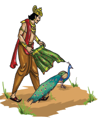
You know very well that the peacock is our national bird. For a long time, the Peacock has a significant place in our culture, art and heritage. It’s beauty, stately appearance and its even distribution all over India makes it our national bird said Manimaran.
The vehicle moved forward silently. They admired the beauty on either side even without blinking.
We have come very close to the bank of the river. Now we have to go along the river. I am going to show you a different animal. You have to remain silent; only then you can see it. Please take your binoculars said Manimaran.
Veena had instructed the team to bring their binoculars on the visit. Velan and Ponni had borrowed the binoculars from their neighbours. They focused their binoculars towards the gap between the bushes. That gave them a view of the river. Veena said, “Look, there is something black like a Gharial crocodile moving”. They could not see the animal clearly due to the glare caused by the morning sun. Manimaran said, “Turn away from the Sun’s rays and watch carefully. It is not a Gharial.
Veena said, no it does not look like a fish. It looks like an aquatic mammal – a river dolphin.
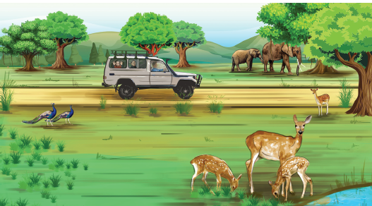
Velan and Ponni exclaimed, What? Is it a dolphin? Marine acrobatic animal? How can it live in a river?
Manimaran said, there are river dolphins in our country. The dolphins that live in the rivers have a long snout similar to the Gharial crocodiles. Just like bats, they use the ultrasound waves to catch their prey. They are essentially blind.
Velan said, that was an interesting detail.
Do you know the name of the river beside which we are now on?
The rich harvests of the fertile plains of Ganges was mentioned in one of Bharathiyar’s famous songs. Am I on the same banks of Ganges? My father asked me to collect some information about this place before visiting it, said Ponni.
No doubt about it.
Do you know that this river is 2,525 kilo meter long and is the longest river in India? said Velan stunning everyone around.
Though Brahmaputra is 2900 km long, it does not flow across India. So, What Velan said is right said Veena.
Manimaran said, we have seen a lot of things. Now let us relax. Come, let us have these pieces of mangoes.
These mangoes are very tasty, what kind of mangoes are these? asked Veena eagerly.
This kind of mango is known as Imam pasand a variety of mango that was cultivated during the Mughal reign for the royal family. This is occasionally found in the forest. Even this was picked from the mango grove at the fringes of this forest said Manimaran. Eveyone got into the vehicle and were ready to go.
Now we are going to see another wonder said Manimaran and drove the vehicle around a big banyan tree with countless roots around. He travelled around it for a few minutes and came back to the starting point. Such a big banyan tree? exclaimed Ponni and Velan.
This is a very big banyan tree and is the oldest in this forest. It is the habitat of thousands of birds. It is as famous as the banyan tree in the Indian Botanical Garden in Howrah (Calcutta), said Manimaran.
There is another big banyan in Adyar (Chennai). It is as big as that. I saw that when I visited the Theosophical Society and wondered at it. said Ponni.
Let us now go slowly because there is a herd of elephants climbing the mountains right behind the banyan tree said Manimaran.
Velan replied at once, Oh! Aren’t the wild elephants ferocious? Are we in danger?
Manimaran said First and foremost we are not supposed to trouble the wild animals because the forest is their home. We can admire them without disturbing them.
Manimaran continued We should know how to safeguard ourselves from the encounters of the wild animals. That is the reason why we try to explore the forests with the guides who belong to the forest tribal community.
Even though the animals are quite huge, they will not harm you unless you hurt them.
Let us also climb the hills along with the elephants. There is another surprise waiting for you on the top of the hills said Manimaran.
After climbing the hill, they came across a plain. He parked the vehicle and asked the team to see something using their binoculars. Look there,
There was a cone shaped nest built with dried leaves. Manimaran asked, can you guess which animal’s nest is that?
I know that birds build nests on the ground, but this seems a bit strange, said Veena.
It is a snake’s nest, the nest of king cobra.
What? Snakes build nests? said Velan.
This is the only reptile that builds a nest of its own and reproduces. Thus, snake’s average length is 18 feet and is the longest of the poisonous snakes” said Manimaran.
We have explored the forest and climbed the hills but we have not seen a tiger till now said Ponni.
Don’t worry Ponni. We have come across many wonders. The Tiger is a very shy animal. While descending down the hills we may see one on the rocky area on the slope said Manimaran.
They had seen many unusual things that day. But they were very disappointed because they had not seen ever a tiger.
I have visited several forests but they are not identical. I got some new information from Mr.Manimaran and the tribals. I have visited forestes many times regarding my research. But I was not able to see the tiger. Don’t worry, we will see a tiger some time later comforted Veena.
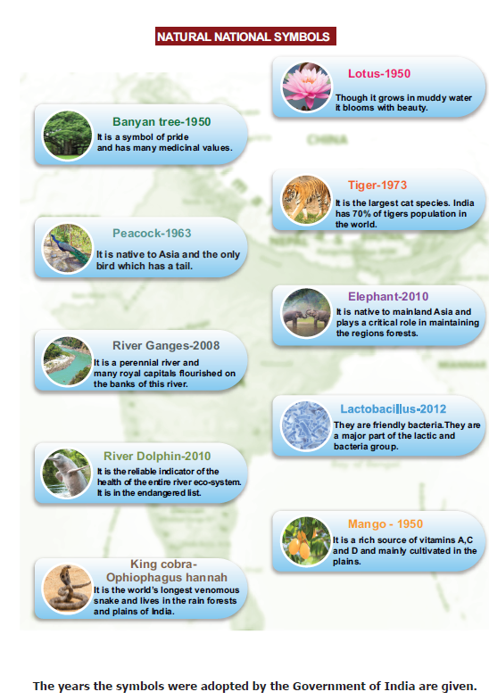
The description for the image begins
Natural National Symbols
Banyan tree 1950 – It is a symbol of pride and has many medicinal values
Peacock 1963 - It is native to Asia and the only bird which has a tail
River Ganges 2008 – is a perennial river and many royal capitals flourished on the banks of this river.
River Dolphin - 2010 - It is the reliable indicator of the health of the entire river eco-system. It is in the endangered list.
King cobra- Ophiophagus Hannah - It is the world’s longest venomous snake and lives in the rain forests and plains of India.
Lotus-1950 - Though it grows in muddy water it blooms with beauty.
Tiger-1973 - It is the largest cat species. India has 70% of tiger’s population in the world.
Elephant-2010 - It is native to mainland Asia and plays a critical role in maintaining the regions forests.
Lactobacillus - 2012 - They are friendly bacteria. They are a major part of the lactic and bacteria group. They descended down the hill and came to the same place where they had watched the river dolphins.
Mango – 1950 - It is a rich source of vitamins A, C and D and mainly cultivated in the plains.
The description for the image ends
They descended down the hill and come to the same place where they had watched the river dolphins. They parked the vehicle and rested for a while. Ponni came out of the vehicle and watched through the binoculars. She noticed something strange. She couldn’t control herself she whispered “Uncle, look there.” All of them quickly turned to look with their binoculars. They saw a tigress with her three cubs drinking water from the river. Veena captured the beautiful scene with her camera. Nobody dared to see anything other than the tigress, till it left the river bank and vanished away.
This is the real king of the forest said Manimaran.
It is absolutely true said Veena.
They all got back to the vehicle and were returning. Veena asked the team a question. Do you know, there is something common between all the wonders you have seen today?
What is common? asked Velan.
Please, tell us quickly. We are very eager to know said Ponni.
All that we saw today are our natural national symbols said Veena
You are right, Veena. This didn’t strike me. said Manimaran.
National flag:
The tricolour flag is our National flag. The three colours are of the same width and are arranged horizontally. The saffron at the top represents valour and sacrifice. The green at the bottom represents fertility and prosperity. The white band in between represents honesty peace and purity. The Ashoka chakra or the wheel in navy blue represents truth and peace.
Out National Flag’s length and width proportion is 3 is to 2 respectively and the Ashoka’s chakra has 24 spokes in it.
National Emblem
The four lions on top of the Ashoka Pillar at Sarnath was chosen to be our National emblem. The national emblem was accepted on 26th January 1950,
HOTS
Who has been given the right to manufacture the National flag?
Satyameva Jayate has been inscribed at its bottom. It means ‘Truth alone triumphs. The National emblem consists of two parts-the upper and the lower parts.
The upper part has four lions facing the North, South, East and West. This is on a circular pedestal. One can only see three lions at a time.
The lower part has an elephant (energy), a horse (speed), a bull (hardwork) and a lion (majestic). The ‘Wheel of righteousness’ is placed between them. This emblem is found at the top of the government communication, Indian currency and passport.
National Anthem
Jana Gana Mana is our National anthem. It symbolises the sovereignty and integrity of our nation. This anthem was written by Rabindranath Tagore in Bengali. This was Tran scripted in Hindi and was accepted by the Constituent Assembly on 24th January 1950.
The rules to be observed while singing the Anthem
National song
The song Vande Mataram, composed by Bankim Chandra Chatterjee, was a source of inspiration to the people of India in their struggle for freedom. It has an equal status with Jana Gana Mana. On January 24, 1950, the then President, Doctor Rajendra Prasad came up with a statement in the Constituent Assembly, the song Vande Mataram, which has played a historic part in the struggle for Indian freedom, shall be honoured equally with Jana Gana Mana and shall have equal status with it.
The song was a part of Bankim Chandra’s most famous novel Anand Math.
National pledge
India is my country. All Indians are my brothers and sisters is our national pledge. The pledge was written by Pydimarri Venkata Subba Rao in Telugu.
National Micro organism
The curd which we consume every day is curdled from milk by a microorganism called lacto bacillus delbrueckii. This was accepted as our national microorganism in the year 2012. This microorganism makes the milk undergo a chemical reaction and changes the protein content of the milk. Curd is known for its digestive quality and cooling capacity.
Currency of India- (INR) `
The Indian currency is the Indian Rupees. The currency released by SherShah Sur in the sixteenth century was ‘Rupiya’. This ‘rupiya’ has been transformed, into ‘Rupees’. The symbol of rupees is `. This was designed by D. oothayakumar from Tamil Nadu in the year 2010.
National Calender
During the reign of Emperor Kanishka he began following a new calendar in the year 78 CE/AD. The year begins from the spring equinox which falls on March 22nd. During a leap year, it begins on March 21st. Our country follows this calendar. The famous astronomer Meghnad Saha headed the Calendar Reformation Committee on 22nd March 1957. It was then accepted by the committee as our national calendar.
The National symbols help in uniting the diversified sections of India and to instill patriotism.
National Holidays
Independence Day
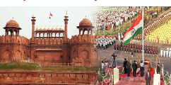
Every year, August 15 is celebrated as the Independence Day to commemorate India’s freedom from British rule. This auspicious day is also marked as a birth of the world’s biggest democracy, India.
On the day India gained independence, Mahakavi Bharathiyar’s poem Aaduvome Pallu Paduvome and it was sung over the AIR (All India Radio) by T.K. Pattammal, a famous singer of Carnatic Music. The celebration of Independence Day continues every year. The Prime Minister unfurls the National Flag on the Independence Day at the Red Fort, New Delhi.
Republic Day
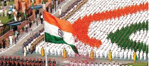
On 26th January 1950, India was declared as a Republic state. Every year this day is commemorated as the ‘Republic Day’. The constitution commenced on 26th January 1950. From August 1947 to 26th January 1950, the Queen of Britain was the honorary head of India. The day India was declared as a Republic state, the President became the first citizen of India. On Republic Day, the President of India unfurls the National flag on Kartavya path (the path of duty), New Delhi.
Gandhi Jayanthi
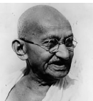
The birthday of Mahatma Gandhi, the Father of our Nation, was declared
one of the National festivals. It falls on 2nd October. In 2007, the United Nations declared October 2nd as the ‘International Day of Non-violence
Independence - Freedom from control of another country or organization.
Republic - A country in which the Head of State is an elected person.
Heritage - The art, buildings, traditions and beliefs that a society considers important to its history and culture.
Aquatic - Growing or living in or near water.
Astrophysicist - An expert in astrophysics.
1. There is a Peacock Sanctuary at Viralimalai in the district of Pudukottai (Tamilnadu)
2. Kodi Kaatha Kumaran
T i r u p u r Kumaran was born in Chennimalai of Erode district. As a youth, he actively participated in the freedom struggle for India. In 1932, when Gandhiji was arrested, protests were held against the arrest all over the country. When protests were held for Gandhiji’s release, Tirupur Kumaran took active part in it. He lost his life when the police attacked violently. He held on to the tricolor flag even when he died. He was honoured with the title, ‘Kodi Kaatha Kumaran’. The Government of India has released a postal stamp on his centenary year to remember Tirupur Kumaran’s sacrifice and dedication to the nation.
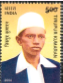
3. The National flag was designed by Pingali Venkayya from Andhra Pradesh.
1. The National Song Vande Mataram was composed by dash
a) Pingali Venkayya
b) Rabindra Nath Tagore
c) Bankim Chandra Chatterjee
d) Gandhiji
2. Which is the National Anthem of India?
a) Jana Gana Mana
b) Vande Mataram
c) Amar Sonar Bangla
d) Neerarum kaduluduththa
3. Who wrote the most famous novel Anand Math?
a) Akbar
b) Rabindra Nath Tagore
c) Bankim Chandra Chatterjee
d) Jawaharlal Nehru
4. dash birthday is celebrated as the International Day of nonviolence?
a) Mahatma Gandhi
b) Subash Chandra Bose
c) Sardar Vallabhai Patel
d) Jawaharlal Nehru
5. The colour of the Asoka chakra found in our National flag is dash
a) sky blue b) navy blue
c) blue d) green
6. The first flag ever flown after the Independence is stored in dash
a) Chennai fort Museum
b) Delhi Museum
c) Saranath Museum
d) Kolkata Museum
7. The National Anthem was written by dash
a) Devandranath Tagore
b) Bharathiyar
c) Rabindranath Tagore
d) Balagangadhar Tilak
8. The time taken to play the National Anthem is dash
a) 50 seconds b) 52 minutes
c) 52 seconds d) 20 seconds
9. Vande Mataram was first sung by dash at the 1896 session of the National Congress
a) Bankim Chandra Chatterjee
b) Rabindranath Tagore
c) Mahathma Gandhi
d) Sarojini Naidu
10. dash hoists the flag on Independence Day in Delhi
a) The Prime Minister
b) The President
c) Vice President
d) Any Political leader
1. The National emblem was adopted from the Ashoka pillar of dash
2. The National fruit of India is dash
3. The National Bird of India is dash
4. Our National tree is the dash
5. The Flag which was flown in 1947 Independence Day was weaved in dash
6. The Indian National Flag was designed by dash
7. dash started the Saka Era
8. The longest river in India is dash
9. The Indian Rupee symbol was designed by dash
10. The Chakra of the National Flag has dash spokes
1. The Lion Capital is now in the dash museum (Kolkata slash Sarnath)
2. The National Anthem was adopted in dash (1950/1947)
3. is declared as our National Microorganism (Lacto bacillus Rhizobium)
1. Saffron – Courage; White - dash
2. Horse – Energy; Bull - dash
3. 1947 – Independence Day; 1950 - dash
1. Rabindranath Tagore - a.National Song
2. Bankim Chandra Chatterjee - b. National Flag
3. Pingali Venkayya - c. Astro Physicist
4. Meghnad Saha - d. National Anthem
a) 1 a, 2 d, 3 b, 4 c
b) 1 d, 2 a, 3 c, 4 b
c) 1 d, 2 a, 3 b, 4 c
1. National Reptile – Tiger
2. National Aquatic Animal – Lacto bacillus
3. National Heritage Animal – King Cobra
4. National Microorganism – Dolphin
1. a) The ratio of our National Flag’s length and breadth is 3:2
b) The Chakra has 24 spokes
c) The Chakra is Sky Blue in colour
2. a) The National Flag was designed by Pingali Venkayya
b) The First ever flown Flag after the Independence is stored in Kolkata Museum
c) The First National Flag was weaved in Gudiyattam
1. a) August 15 is celebrated as the Independence Day
b) November 26 is celebrated as the Republic day
c) October 12 is celebrated as Gandhi Jayanti
1. What do the colours in our National Flag represent?
2. What are the parts of our National emblem?
3. What are the salient features of the National anthem?
4. Draw and define the Indian Rupee symbol
5. Where do we use our National emblem?
6. Who wrote the National pledge?
7. What are the animals found in the bottom of the emblem?
8. What are the natural national symbols?
9. Where is the peacock sanctuary located in Tamil Nadu?
Why are certain organisms adopted as natural National symbols? Analyse.
ICT CORNER
Symbols of India and Indian States
Let us learn about The Constitution of India

Step 1: Go to play store and install National symbols App.
Step 2: Open the app. Click any national symbol like National Flag, National Bird etc. to know more about the symbol.
Step 3: Click the Back button and scroll below to see States. Select states and click Tamil Nadu for instance.
Step 4: Now you can see the symbols about Tamil Nadu.

URL. https://play.google.com/store/apps/details?id=com.cdac.symbol


Pathway
The Lesson speaks about the formation of the constitution of India. It gives guidelines to govern the country, while ensuring the fundamental rights and duties of the citizens and how it protects them.
Yaalinian and Sudaroli are brothers. Yaal is student of standard six and Sudar is in standard four. Yaal was preparing for his class test. Sudar after completing his home assignments was watching an animated series on television. Sudar was watching it but the noise level disturbed Yazh. Sudar was totally engrossed in the series and laughed and clapped loudly. Yazh could not concentrate on his lessons.
So, he asked Sudar to reduce the volume. But Sudar was not ready to adhere to his
elder brother’s advice. Inspite of Yaal’s continuous request Sudar did not reduce the volume.
Yaal complained to his father that Sudar did not decrease the volume of the television in spite of requesting him several times. Yaal made it clear that he had a class test the following day.
Isn’t your brother preparing for his class test? Weren’t you wrong in troubling him? continued his father.

I was watching the TV Yaal kept disturbing and stopped me from watching it said Sudar.
Studying for the test and watching television are not the same said his father.
But Sudar was not ready to accept the fact. Sudar was consistent that he had all rights to watch a film as much as Yazh had the right to study.
His father admitted that both had equal rights. But one must not hinder another’s freedom. Sudar didn’t realise the fact that he was very stubborn.
Look Sudar. You have all rights to watch the film said his father.
Yes dad.
Similarly, Yaal also has the right to listen to his favourite song on TV Coundn’t he?
How can that happen? When I watch the television, he cannot do that.
When you can watch a film by increasing its volume, Yazh can also hear music loudly. said father.
How will I watch the movie?
How will Yazh study?
Oh, didn’t think of it. Okay dad, I will not watch the movie while Yazh studies.
No, my child. You can watch the movie without causing trouble to anyone.
Don’t be angry Yaal. You study and I promise I will not disturb you.
Yaal smiled and patted Sudar’s back and left the place.
Sudar’s mother was watching everything silently. She said, even to run a small family don’t we need to follow so many rules and regulations? How much more of that will we need to administer a country? she exclaimed.
It is an ocean Deepa. In order to administer people who, follow different religions, speak different languages and belong to different castes and culture and treat everyone equally, we need to have a good code of laws and guidelines which we call as The Constitution of India.
The next day Sudar and Yaal went to school. It was the Republic Day also.
The celebration was a jubilant. The students and teachers were standing in line around the flag post. Immediately after the hoisting of the flag, a discussion was held with the chief guest for the day, Mister Arumugam, an expert in social sciences.
Wish you a happy Republic Day!” wished Mister Arumugam.
Wish you the same Sir.
Do you know why do we celebrate the Republic Day?
Our Constitution was framed and came into existence from 26th January 1950. That is why every year we observe this day as the Republic Day. said the history teacher Malarmathi.

Yes, it is true. There are other reasons why this constitution came into existence on 26th January 1950. When the Congress met at Lahore in 1929, the members of the Congress unofficially declared the same day as the Day of Poorna Swaraj or the Day of complete self-governance. The next year, 26th January 1930 was celebrated as the Independence Day. That day has been observed as our Republic Day.
What do you mean by the “Constitution of India asked Nathar.
Before that, let me ask a few questions. You answer me. Then I will explain in detail about the constitution of India.
All right sir.
(The students were prepared to answer the questions)
Are you following any rules and regulation at home?
Yes sir
Are you following any rules at school?
Yes sir
Do the two are the same or different?
Mostly, they are different
Is it necessary to follow certain rules in public places?
Yes, Sir
Why is it necessary?
We should not disturb anybody in public said Tamilselvi.
It’s true. Also no one should disturb us”said Selva
Yes, I do accept it. But what if someone compels you to follow some rules? How would you feel?
It would be difficult to do so.
How do you feel when you are asked to make your own rules?
We would be proud and pleased to obey our own rules.
(Everyone agreed and nodded their heads)

The Constitution is an authentic document containing the basic ideas, principles and laws of a country. It also defines the rights and duties of citizens. The laws governing a country originate from the constitution. Every country is ruled on the basis of its constitution
What are the things that make the constitution of India? asked Deepika.
The constitution of India is the ultimate law. We have to abide by it. It explains the fundamental concepts of structure, methods, powers and the duties of Government bodies. It also lists the fundamental rights and duties of the citizens. Directive Principles are also mentioned in the constitution. So, it is holistic in nature.
When did they begin to frame the constitution? asked Christopher.

In 1946, nearly 389 members of the constituent Assembly who belonged to different places of the country came together to frame the Constitution of India. The Chairman of the committee was Mr. Rajendra Prasad.
Who were the other significant members in the Constituent Assembly?
Jawaharlal Nehru, Sardar Vallabai Patel, Moulana Azad, S. Radhakrishnan, Viajalakshmi Pandit and Sarojini Naidu were the members in the Constituent Assembly.

How many women members were there in the Constituent Assembly?
15 women members were in the Constituent Assembly.
The Drafting committee was formed with eight members and its Chairman was B.R. Ambedkar; B.N.Rao was appointed as an advisor. The committee met for the first time on 9th December 1946. On the same day, the drafting of constitution of India started”.
How did they form the Indian constitution?
The constitutions of nearly 60 countries including the UK, USA,former USSR, France , Switzerland etc., were thoroughly examined and their best features have been adopted by our constitution”.
Did they draft it in a short span of time?
No, nearly 2000 amendments were made before the draft was finalised
When did they complete this work?
It took a period of 2 years, 11 months, and 18 days. It was completed on 26th November 1949.
The constitution was accepted by the Constituent Assembly. So, 26th November is celebrated as the Day of the Constitution. isn’t it? said Karthikeyan.
Yes, said Mister Arumugam

How much was spent to frame the constitution of India? asked Nathar.
They spent almost 64 lakhs.
What are the objectives of the Constitution?
The Preamble of our constitution stresses on the justice, liberty, equality and fraternity.
What is a Preamble?

The preface of the constitution is the Preamble. According to it, India is a Sovereign, socialist, Secular democratic republic.
What does it mean by Sovereign?
The constitution has granted the people the right to rule. The members of the parliament and the legislative assembly are elected by the people. The right to decide is only in the hands of the representatives. Sovereignty refers to the ultimate power of the country.
What is the meaning of Secular?
Law allows all the citizens of a country, the right to follow different faith and religious beliefs. All citizens enjoy the freedom of worship. The country does not have a religion of its own. All the religions in our country hold the same status.
The Government of India rules through the Parliament, doesn’t it?
Yes, the Constitution of India provides a Parliamentary form of Government, both at the centre and the state. In a Parliamentary System, the Executive is collectively responsible to the Legislature. The party which has the majority forms the government.
What are fundamental rights?
Fundamental rights are the basic human rights of all citizens.
What are they?
1. Right to Equality
2. Right to freedom
3. Right against exploitation
4. Right to freedom of Religion
5. Cultural and Educational Rights
6. Right to Constitutional Remedies
They are Right to Equality. Right to freedom, Right against exploitation, Right to freedom of Religion, Cultural and Educational Rights and Right to Constitutional Remedies.
You mentioned about Directive Principles. What do you mean by that?
There are certain guidelines to be followed while the governments frame law. Though these are not mandatory, they should be considered.
What is Universal Adult Franchise?
Every Indian citizen has the right to vote when they attain 18 years of age, irrespective of any caste, religion, gender or economic status.
Like fundamental rights, every citizen will have duties too, won't they?
Yes, There are duties respecting the National flag and National Anthem, respect and protect the Constitution, follow our great leaders who fought for our freedom, to protect our country, readiness to serve our country if necessary, treating everyone as brothers irrespective of their castes, religions, languages, races etc., to conserve our ancient heritage, and conserve natural elements like forests, rivers and lakes and fauna, to develop science, humanity and feelings of reformation to avoid non-violence and protect government property, parents or guardians providing educational opportunities to children between 6-14 years etc., have been added as our duties Mister Arumugam concluded his discussion.
1. The Father of the Constitution of India’ is Doctor B.R. Ambedkar.
2. The original copies of the Cons titution of India (Hindi, English) are preserved in special Helium filled cases in the Library of the Parliament of India.

1. The Constitution Day is celebrated on
a) January 26 b) August 15
c) November 26 d) December 9
2. The Constituent Assembly accepted the Constitution of India in the year
a) 1946 b) 1950
c) 1947 d) 1949
3. There are Dash amendments made in the Constitution of India till 2016
a) 101 b) 100 c) 78 d)46
4. Which of the following is not a fundamental right?
a) Right to freedom
b) Right to equality
c) Right to vote
d) Right to education
5. An Indian citizen has the right to vote at
a) 14 years b) 18 years
c) 16 years d) 21 years
1. Dash was selected as the chairman of the Constituent Assembly
2. The farther of the Constitution of India is dash
3. Dash protects our fundamental rights
4. The Constitution of India came into existence on dash
1. Independence Day - a. November 26
2.Republic Day - b. April 1
3. Constitutional Day of India – c. August 15
4. Right to Education - d. January 26
1 2 3 4
a.) 1 c, 2 a, 2 d, 4 b
b.) 1 c, 2 d, 3 a, 4 b
c.) 1 d, 2 b, 3 a, 4 c
1. In which year was the Constituent Assembly formed?
2. How many members were in the Drafting Committee?
3. How many women were part of the Constituent Assembly?
4. When was the Constitution of India completed?
V. Answer the following questions:
1. Why was January 26 adopted as the Republic Day?
2. What is the Constitution of India?
3. List out the special features of the Constitution of India
4. What are the fundamental rights?
5. List out the fundamental duties that you would like to fulfil
6. What is Preamble?
7. What do you understand by Liberty, Equality and Fraternity?
8. Define: Sovereign
VI. Projects and Activities:
1. Let the students work individually or in a group to prepare rules for their class. From them discuss and a form a list of rules and regulations for their class.
2. List your duties at
a) school b) home and c) society
3. Discuss on these topics:
a) Equality b) Child labour
c) Right to Education
4. Kailash Satyarti (India) and Malala Yusufsai (Pakistan) have been awarded the Nobel Prize for Peace (2014) Find out the reason why.
Life Skill:
Which of the fundamental rights do you like the most? Why?
Fundamental rights and duties are guaranteed by the constitution. Look at the picture and share your opinions.

ICTCORNER
The Constitution of India
Let us learn about The Constitution of India

Step 1: Type the URL or scan the QR code to open The Constitution of India page. Through this page we are going to learn about the constitution of India.
Step 2: Click the GO button in that page. Here we get some questions. Click any question to learn
the related concepts.
Step 3: To know more, click the next button in the lower right corner. Now we get more
information.
Step 4: To go to the next concept, click button in the upper right corner.


CIVICS – Class VI
List of Authors and Reviewers
Domain Expert
Dr. Kottai Rajan Asst. Professor, Deportment of Political Science, Periyar Government Arts College, Cuddalore.
Reviewer
Appanasamy M. Advisor, TNTB & ESC, DPI Campus, Chennai.
Authors
Shanthi N. S.G.T., Government High School, Palavedu, Thiruvallur.
Edwin R. B.T. Assistant, Samayapuram government high school, Samayapuram.
Adhivalliyappan Writer, Chennai.
Saravanan Parthasarathy Writer and Translator, Okkur, Sivagangai.
Academic Co-ordinator
Sujatha M. Senior Lecturer, DIET, Chennai.
Authors
Shanthi N. S.G.T., Government High School, Palavedu, Thiruvallur.
Edwin R. B.T. Assistant, Samayapuram Government highschool, Samayapuram.
Aathivalliyappan
Writer, Chennai.
Saravanan Parthasarathy Writer and Translator, Okkur, Sivagangai.
ICT Co-ordinator
D. Jeyaselvan
B.T. Assistant,
GHS, Varagur, Tanjore Dist.
D. Vijay Ananth
B.T. Assistant,
Phanchayat union middle school, Attayampattayan Vattam, Tharamangalam, Salem District.
EMIS Technology Team
R.M. Satheesh State Coordinator Technical, TN EMIS, Samagra Shiksha.
K.P. Sathya Narayana IT Consultant, TN EMIS, Samagra Shikaha
R. Arun Maruthi Selvan Technical Project Consultant, TN EMIS, Samagra Shiksha
Art and Design Team
Illustration K.T. Gandhirajan, Chennai. Tamil Virtual Academy.
Layout V.S. Johnsmith
Wrapper Kathir Arumugam
QC Manohar Radhakrishnan Co-ordination Ramesh Munisamy

The laughter of children echoed throughout the children’s park of that apartment. Some slided down joyfully down the slide and some went up and down in the see – saw, shouting cheerfully. Others were swinging so high and fast, in the swings as if they were about to reach the sky. Some children were waiting near the swings to play next.
Kavin did not join with any of these children. He sat alone in a corner, staring somewhere. His uncle Mohan noticed Kavin and came near him.
Kavin, are you going to play with your friends? asked his uncle as he sat next to Kavin.
Uncle, everyone teases me, calling me a villager, said Kavin, with tears rolling down his eyes. Even our Vimalan laughs along with them. I came here for the holidays with so much of excitement. Now, I regret my presence here. I want to go back to our village, uncle, sobbed Kavin.
Is it so? Where is Vimalan? asked his uncle and started to search for his son in the crowd.

Vimalan. called him in loud voice. On hearing his father’s voice, Vimalan enquired, did you call me, dad? and came near him.
Did everyone tease Kavin? asked Mohan.
Vimalan didn’t utter a word. He stood quietly.
Even though I live in this big city, I also hail from the same village. My roots are still there said his father worriedly. Then he added, Go and bring your friends. I have to tell something to you. Saying this, he sat near Kavin.
When Vimalan brought his friends, his father made them all sit down together. Mohan asked the children, let me come to the point directly. Do you know from where do we get all the food?”
The rice and pulses we eat? We buy them from shops, said Anandhan
Tell me, where do the shopkeepers get these things from?
I guess they would buy them from another shop.
I think they would buy them from those who grow crops, uncle, said Inba.
Correct! We call those people who raise crops as farmers. Farming is the main occupation in villages.
The children looked at each other in surprise.
The farmers grow various crops like pulses, grains, vegetables etc., and send them to the shops in cities. We buy and consume them”.
Uncle, I have a doubt, said Kavin.
Tel me, Kavin
In villages, I have seen people selling all kinds of things in a place. Why do they call it ‘Sandhai’, instead of shops?
Yes, Kavin,
HOTS
Imagine if money disappears one day?

In villages, once in a week or month, all things are sold in a particular place at a specific time to meet the needs of the people. That is called ˋSandhaiˊ

Do you all know from where do they bring these things to Sandhai?
We don’t know, uncle”, said the children.
I told you already that the things which are produced in villages are brought to sandhai.
“Fine, Kavin. Do you know what activities are carried out in a sandhai?”
Buying and selling, said Kavin.
Very good Kavin. Apart from going to the sandhai with your mother, you have also noticed what’s happening around you.
The finished goods which are bought from the market to fulfill the daily needs of the consumers is called consumer goods. Example: rice, clothes, bicycles, etc.
Hearing this, Kavin smiled.
All the children said in unison, without knowing the importance of villages, we teasted kavin. Forgive us, uncle, we won’t hurt anyone herafter. We wish to know more about this.

Plan for a model Sandhai.
Sure, I will tell you, said Mohan,
Small traders and other people buy things from sandhai, explained Mohan.
Do you know in olden days we had a system of exchanging goods for other goods, called barter system? For example, exchange a bag of rice for enough clothes.
A person who has rice in surplus and a person who has cloth in surplus, will exchange on the basis of their needs. But, here the problem is that the person who has clothes should have the willingness to buy rice. Only then, the exchange through barter system will take place.
When they exchange commodities, they may lead to certain problems, when comparing the differences in the value of commodity. To solve this problem, people invented a tool called money.
Really. Is it so exclaimed the children?
“You know that early man, who hunted and gathered food, later learnt to cultivate crops. When they found rivers which provided them water, settled down permanently near the rivers. These permanent settlements were called villages. Agriculture remains to be the root of our economy even today. Man has no limits for his demand and desire. Based on this, man started to learn new occupations. Those who are involved in farming and grazing are called farmers or cultivators”.
Is agriculture the primary occupation?
Yes, there are certain other primary activities like farming.
Agriculture and industries are helpful in the economic development of our country. Our country’s economy is based on three economic activities. cultivators

The amount from the income which is left for future needs after consumption is called savings.
அளவறிந்து வாழாதான் வாழ்க்கை யுளபோல
வில்லாகித் தோன்றாக் கெடும். -குறள் 479
விளக்கம்: தன் செல்வத்தின் அளவு அறிந்து அதற்கு ஏற்ப வாழாதவனுடைய வாழ்க்கை பல வளங்களும் இருப்பது போல தோன்றி உண்மையில் இல்லாதவனாய்ப் பின்பு அப்பொய்த்தோற்றமும் இல்லாமல் அழியும்.
Sing or Play the song ஒன்றிலிருந்து இருபது வரைக்கும் கொண்டாட்டம், கொண்டாட்டம். Interpret the lyric of the song and what is the logic behind the song.

Fill up the given table.
Serial number 1 |
Country, Germany |
Write the Currency name |
Write the Currency name |
Serial number 2 |
Country, Brazil |
Write the Currency name |
Write the Currency name |
Serial number 3 |
Country, India |
Write the Currency name |
Write the Currency name |
Serial number 4 |
Country, Argentina |
Write the Currency name |
Write the Currency name |
Serial number 5 |
Country, China |
Write the Currency name |
Write the Currency name |
They are concerned with the production of raw materials for food stuff and industrial use. Primary activities include

Is agriculture confined only to villages? What other works do the villagers do?
What will a village look like uncle?” interrupted Inba.
Agriculture is the primary occupation. There won’t be any kind of facilities like our cities. At the same time, they get their basic needs fulfilled easily. There are small shops. Vegetables are grown in abundance, just like rice and pulses. Though the sugar that is added in our milk, coffee and tea is produced in sugar mills, the raw material sugarcane is cultivated in villages. From chilies to mustard, all those provisions used for food are grown in villages.
Wow! My mother told me that these things are very expensive. Therefore, the villagers must be so wealthy!” said Adithya.
No, not like that. They are just producers. Their products are bought and sold by some mediators. So, the farmers get very little money.
What a pity! But the villages are the real shadows of cities”, exclaimed Anandhan.
Even Gandhiji has said that the villages are the backbone of our country.
Yes, what a wonderful saying!” said Kavin excitedly.
At that time, the mobile phone rang. Mohan attended the phone. Vimalan’s mother Ponni had called.
What are you chatting about with the children for so long? The food is ready. Bring them home”, saying so, she cut the call.
Children, come, let’s go home. Food is ready” Mohan got up and the children followed him with joy.
Inba asked, “Uncle, you said how villages are important. Aren’t cities important?
No Inba. Both cities and villages are important on their own.
If it is so, tell us about the importance of cities”, asked Inba again.
That is good. I will tell you. More than 50 percentage of the world’s populations live in cities. In our state Tamil Nadu, 47 percentage of the people are in cities.
Wow, they exclaimed.
Not only that. Tamil Nadu is well developed in secondary and tertiary activities as well. These are city centered activities.
We feel very proud to hear this uncle. Tell us about those activities.
Uncle Mohan said, Well, apart from this, employment opportunities are more in cities than villages. People involved in small scale industries and unorganized sector are mostly found in cities.
We don’t understand.
In villages, there are only a few saloons and laundry shops. But, in cities the number of such small-scale workers are more. This results in additional income in cities.
Really?
“Yes, well paved roads, ports, airports and railway stations support trade. Many branches of banks help in the circulation of money and boost the country’s economy. All these are termed as tertiary activities.
Vimalan exclaimed, “Even being in the city, I never knew about all these.
Inba said, we really got to know more information, uncle
Good, will you compare cities and villages in the future?

The raw materials obtained from the primary activities are converted into finished products through machinery on a large scale. These activities are called secondary activities.
Industries are classified on the basis of the availability of raw materials, capital and ownership.
On the basis of raw materials, industries are classified as

Put tick mark in appropriate box
Serial number 1 |
Occupation, Farmer |
Primary activity |
Secondary activity |
Tertiary activity |
Serial number 2 |
Occupation, Teacher |
Primary activity |
Secondary activity |
Tertiary activity |
Serial number 3 |
Occupation, Tailor |
Primary activity |
Secondary activity |
Tertiary activity |
Serial number 4 |
Occupation, Engineer |
Primary activity |
Secondary activity |
Tertiary activity |
Serial number 5 |
Occupation, Bank Manager |
Primary activity |
Secondary activity |
Tertiary activity |
I already told you that industries produce goods and distribute them to the people. For this purpose, some services are required. These services are called tertiary activities or service sectors. The service sector serves the people to fulfill their daily needs like:

Never, we won’t say such a thing. If anyone talks like that, we will explain whatever we have learnt from you replied the children.
Come let’s go and have our lunch. Said Mohan.
Children said that they will come after playing for some more time.
Holding Kavin’s hand, they all ran towards the park.
Mohan, an economics teacher, felt proud of their unity and satisfied of clarifying something good to the children.
Consumer – the one who uses the products
Commodity – products
Occupation – work or Job
Settlement – living place of human being

1. The producers of food grains are
2. Collection of honey is a occupation
3. The conversion of raw materials into finished goods is called
4. According to Gandhiji the villages are of the nation.
5. The percentage of population in the cities of Tamil Nadu is
1. Cattle rearing – Secondary occupation
2. Food processing – Services
3. Iron & Steel Industry – Primary occupation
4. Telephone – Agro based industry
5. Cotton Industry – Tertiary occupation
1. Small scale Industry – Transaction of Money
2. Forest based Industries – Information Technology
3. Services – Paper Industries
4. Banking – Cattle rearing
1. Agriculture is a (Primary or Secondary) occupation
2. Economic activities are divided on the basis of (ownership or use)
3. Sugar Industries are (Primary or Secondary) activity
4. Agro based industry (Cotton or Furniture)
5. Dairy farming is a (Public sector or co-operative sector)
1. Sandhai – Define
2. What is called barter system?
3. What is trade?
4. What is Savings?
5. What was the necessity for the invention of money?
6. What was the reason for the development of settlements near water bodies?
7. What are called secondary occupation?
8. Name the city centred industries.
1. List out the important primary occupations of your district
2. Mention the manufacturing industries found in your district
3. How are the industries classified on the basis of raw materials?
4. Write down the occupations in the service sector
5. What do you know about the features of cities?
Serial number 1 |
Occupations in Villages |
Occupations in cities |
Occupations in Villages and cities |
Serial number 2 |
Occupations in Villages |
Occupations in cities |
Occupations in Villages and cities |
Serial number 3 |
Occupations in Villages |
Occupations in cities |
Occupations in Villages and cities |
Serial number 4 |
Occupations in Villages |
Occupations in cities |
Occupations in Villages and cities |
Serial number 5 |
Occupations in Villages |
Occupations in cities |
Occupations in Villages and cities |
Activity
|
|
|
Eternal. நிலையான
Kinship. இரத்த உறவு
Contemporary. சமகாலத்திய
Metallurgy. உலோகவியல்
Preceptor. ஆசான்
Doctrine. கோட்பாடு
Virtuous. நல்லொழுக்கம்
Corpse. சடலம்
Monastery. மடாலயம்
Treatise. ஆய்வுக்கட்டுரை
Manufacture. உற்பத்தி
Deplete. பயன்பாட்டில் குறைதல்
Sustainable. நிலைநிறுத்துதல்
Tertiary. மூன்றாம் நிலை
Resource. வளம்
Biotic. உயிருள்ள
Abiotic. உயிரற்ற
Independence. சுதந்திரம்
Republic. குடியரசு
Heritage. பாரம்பரியம்
Aquatic. நீர்வாழ்வன
Astrophysicist. வான்இயற்பியலாளர்
Democracy. மக்களாட்சி
Drafting Committee. வரைவுக்குழு
Preamble. முகப்புரை
Secular. மதச்சார்பின்மை
Socialist. சமத்துவம்
Sovereign. இறையாண்மை
Consumer. நுகர்வோர்
Commodity. விற்பனைப் பொருட்கள்
Occupation. தொழில்கள்
Settlement. குடியிருப்பு